展开文档目录
01
项目定位
小动物有自己的愿望，也会察觉我们的难过，并尝试照顾我们。
项目判断标准一个选题即便画面好看，如果与牵挂、理解、陪伴、获得善意完全无关，就不宜进入主线。
02
世界观母文案
在人类生活的声音之外，
还有一些很轻的声音。
它们来自门口等了很久的小猫，来自陪主人走过很多年的老狗，也来自雨棚下面、努力护住同伴的流浪动物。
它们不一定明白什么是加班、失业、离别。
它们只知道，那个每天摸自己脑袋的人，最近回家后不怎么说话了；那个总会经过巷口的人，今天没有来；身边更小的生命，需要一个不会漏雨的地方。
当小猫终于需要另一只爪子帮忙时，它会把自己的心愿托付给一根胡须。胡须从轻轻张开的前爪间升起，消失在人间，又落在云上小愿事务所的接收碟里。
灯灯是那里的一名年轻工作人员。
灯灯把胡须贴近耳边，耳尖轻轻一动，便听懂了这次求助。它能带来一点小小的奇迹，却不能替任何人过完生活。
所以，它做的事情通常很小：让一次错过变成相遇，让一份心意终于被发现，或者陪一只不知道怎么办的小动物，再试一次。
人类很少知道发生过什么。
他们只会觉得，
今天好像没有那么难熬了。
03
世界规则
创作团队必须清楚，观众不必一次知道。首集不做世界观讲解。
灯灯可以提供机会，最终的选择仍由当事者完成。
例如流浪猫希望小猫被收养：灯灯帮助它们被发现；求助猫观察、尝试靠近、建立信任；人类自己决定是否伸出手。来电动物必须有行动，故事不能变成“打电话—施魔法—问题消失”。
暂时不开发：复杂接线流程、任务积分、寿命交换与复杂额度结算、层层审批、管理者训话、天堂部门斗争、老者猫导师。事务所不承担大量解释工作。
03.1
联络媒介 · 心愿胡须
它把一根自己的胡须交给天空，请另一只爪子，来帮自己守住一件重要的事。
本轮确定的方向求助猫主动取下自己的一根胡须，忍过一瞬间的疼痛，对着胡须许愿；两只前爪轻轻张开，胡须浮起、化光消失，随后出现在云上事务所。灯灯拿起胡须贴近耳边，耳尖轻动，便理解本次求助，收拾小包准备出发。
这是本项目的原创童话设定。地面猫仍不会说人话、不会打字；观众听见的许愿词属于心声，地面实际只有轻轻的喵声、呼吸与环境声。
一、媒介规则：珍贵、直接、容易看懂
二、固定动作链：从舍不得，到愿意交出去
看向牵挂的对象→取下胡须→捧近鼻尖许愿→张爪放行→云端抵达→贴耳、耳尖一动→收包出发
重点不是反复解释操作，而是让观众看见：它原本舍不得，但为了那个人或小动物，愿意把这一次机会送出去。许愿前的回头看、许愿后的松爪，是两处最需要表演的动作。
求助者一侧
认真地把心愿交出去
取下后先护住胡须，鼻尖靠近；释放时一只前爪迟疑地追了一点点，又收回来。神情从不舍变成期待，避免连续哭泣。
接线员一侧
一动耳朵，就进入行动
灯灯用前爪轻托胡须，贴近耳侧；耳尖轻动、目光变认真，立刻合上小包。观众已听过许愿，不再播放一遍任务说明。
三、首集完整仪式分镜 · 约12秒
以下为创作时长建议，不是模型生成参数。仪式前先用人间镜头交代困境；正常集可压缩到6—8秒。
常规集压缩版：胡须已经在爪间 → 一句心声与放行 → 云端匹配接收 → 贴耳、耳动、合包。取须的痛感不必每集重演；同一仪式的不同剪法不等于增加新规则。
四、许愿文案：像悄悄拜托，不像拨打客服
最简固定句
“帮帮我吧。”
前面的画面已经说明它牵挂什么时使用。胡须携带完整意愿，无须字幕把事情从头讲完。
带一点孩子气
“接线员，接线员……”
可接：“让她睡一会儿吧。”重复称呼表达小心翼翼的期待，不设为必须念对的咒语。
替别人许愿
“让它们今晚别淋雨。”
镜头回到猫身后被护住的小猫，让一个具体对象承接这句话。
声音可在轻柔心声与简短字幕之间选择一种主表达；猫的嘴只保留轻喵或自然呼吸。它不会打字，也没有获得日常口吐人言的能力。
五、视觉资产与连续性
- 胡须是一根，始终认得出来自然的轻微弧度、清楚的逆光轮廓与一个柔和须尖亮点。亮光用于让镜头看清，不随意变成羽毛、项链或复杂法器。
- 前爪保持猫的结构“双手张开”落实为坐姿中的两只前爪轻轻分开；托举通过爪背或爪侧表现，不生成人类手指。细小取须动作可用遮挡与剪辑完成。
- 云端只新增必要物件一个接收碟与一个素色小外勤包即可。小包是工作道具，不再叠加耳机、拨号盘、屏幕、工单和复杂制服。
- 耳动是接收完成的标志胡须贴耳、耳尖一动、眼神变化保持稳定，便于观众迅速识别。主角其他时候仍保留自然的耳朵反应。
- 没有新的后台流程不展示身份验证、任务分级、愿望额度界面或排队大厅。胡须抵达后，灯灯直接听取并出发。
六、把媒介放进已有故事
可留给后续的伏笔，尚未定稿一根与旧布有关、始终没有送出的胡须，可以在灯灯的生活场景中出现。它是谁的、曾想为谁许愿，先不回答；后续开发前传时再决定是否启用。主线不提前引入“最后一根”、愿望债务或生命交换。
胡须抵达，是心意被听见。真正的故事，从灯灯来到它身边开始。
V0.7 本轮新增：心愿胡须为联络媒介的确定方向；有限机会属于虚构世界规则。具体次数、胡须视觉尺寸、声音设计及镜头时长仍需试片。未生成新参考图。
03.2
独立提案 · 愿苗与猫猫新生
每完成一个愿望，就种下一点新的相遇。
用户提出的核心想法：主角除了接收许愿胡须，平时也应有正事。完成委托的胡须可以种下，长成现实中不存在、带可爱猫猫形态的科幻植物；每完成一个愿望就种一株。主角平时打理这些植物，开花结果时诞生一只新的猫猫灵魂，来到凡间成为别人的“主子”。
当前状态：作为用户新提出的世界观方向单独展开，尚未将具体生长规律、轮回机制、数量和时间写成定稿。下文“愿苗”名称、养护动作、镜头节奏均为助手细化提案。S2-05是这一方向的空间试图，其他四版办公室不依赖该设定。
一句话设定与母文案
曾经被认真回应的一份心愿，会在云上长成一只准备去爱人的小猫。
灯灯出门以前，要先看看窗后的几盆愿苗。
它们不是普通的花。每一株的根下，都藏着一根已经完成委托的心愿胡须。有的刚冒出两片小耳朵似的嫩叶，有的藤梢卷成了尾巴，还有一朵鼓鼓的花苞，正在光里轻轻起伏。
灯灯给它们添水，把歪掉的盆转向太阳，再把一片沾灰的叶子擦干净。它记得每一盆是从哪个故事里带回来的。
等到花朵准备好了，一只新的猫猫灵魂会在花心醒来。它还不认识人间，也不知道自己将来会睡在哪个人的枕边。
灯灯送它出发，然后腾出一个空花盆。
这时，一根新的胡须轻轻落到了桌上。
从胡须到新生 · 工作链提案
完成一次委托→带回并种下胡须→日常养护愿苗→花苞成熟→新猫灵魂醒来→前往凡间
种下的是已经履行完求助使命的那根胡须。它在人间消失、在事务所出现的传递过程不变；完成任务后仍可留存，是本提案需要新增的生命周期规则。若采用，需同步补充03.1；目前不把植物加入“收到胡须→贴耳听懂→出发”的接愿步骤。
植物应该怎样可爱
幼苗 · 像耳朵
两片嫩叶形成猫耳轮廓，叶脉与绒毛仍像植物；有小动作，但不用真正的猫头替代花。
长大 · 像尾巴
一根细藤在枝旁轻轻卷起，主角路过时会勾住它的围兜边；植物有猫咪般的好奇。
花苞 · 像睡猫
半透花瓣包成团睡的小猫轮廓，里面有温暖微光。开花后才看清灵魂，避免一开始就把答案全部亮出。
视觉建议：土、盆、叶脉和室内光线保持真实，超现实集中在生长形态与花心微光。S2-05目前只做了发光花苞的环境试图，尚不是植物独立定稿卡。
主角每天具体忙什么
它怎样服务单元剧
主线：地面求助者仍是单集情感中心，完成帮助本身就有意义。支线：养护愿苗给灯灯稳定的日常工作，也保留笨拙、认真、偷懒后补救的喜剧空间。系列连续性：同一盆从小芽到花苞，多集后开花，观众会记得它来自哪次帮助。
建议常规集只用一个简短养护动作交代“它本来就在忙”，结尾偶尔补种植画面；完整的新生过程留给独立支线或阶段性篇章，不要求每集重复整个流程。具体秒数和播出顺序待脚本测试。
三个可以试写的片段
- 《把太阳让给它》：灯灯抱着尾巴刚躺下，发现最小的苗还在阴影里。它把自己的软垫挪开，让苗晒太阳，自己挤进旁边一点点光里。
- 《总是勾住我的那盆》：巡护时小藤不停拽它的围兜。等灵魂醒来，也轻轻勾住它的爪子；同一个动作成为植物与新生小猫之间的联系。
- 《今天少了一盆》：镜头先给空花盆，再给灯灯替新芽浇水；最后在人间，一只陌生小猫试探着贴近一个人的鞋边。用相似动作呼应，不直接宣告它必然拥有幸福一生。
采用前要决定的边界
- 新生命与旧生命：用户说的是“新猫猫的灵魂”。建议按新生理解，不自动写成求助猫死亡、旧猫复活或主角掌管全部轮回；与现有“不复活”规则保持区分。
- 成长时间：不同愿苗多久成熟尚未确定；不先绑定任务大小、点赞数或委托数量，不把善意排成等级。
- 照顾失败：建议暂不把忘浇水直接写成灵魂死亡，也不让未完成委托等于剥夺某只猫出生的资格。这是降低设定负担的建议，尚待讨论。
- 怎样下凡：灵魂离开花朵后，如何对应凡间出生、是否记得云上、灯灯能否再遇见它，都尚未设定。画面暂可止于出发微光，不擅自决定主人或替代自然出生过程。
- 隐线关系：主角悲惨过去不因此自动变成“它也是某盆花长出来的”；若要连接，单独开发，不抢先定稿。
开发建议先挑一种苗型，做“幼芽—花苞—成熟—空花盆”的资产卡，再试一个“正在养护时收到胡须”的短镜头。能同时看清工作、猫味和新愿望，才继续扩展完整的新生流程。
04
主角设定 · 小星（形象已选）
一个受过伤，却依然阳光、愿意伸出猫爪的小伙伴。
当前主角已选定 · V3-05 歪环小星2026-10-13，用户明确选择小星作为主角。基准外形：杏奶油毛、琥珀眼、卷额毛、嫩芽围兜、微倾自发光环与单颗星光；奶白金尖羽翼用于天地往返。可可及其他方案保留为历史探索，不再作为当前主角基准。
两种形态只差翅膀：日常尾巴是什么样，有翼形态仍是什么样；长度、毛量、卷曲与尾根位置一致，不能为了露出羽翼而截短或省略。当前已重新生成干净的无物品四视及独立细节图；向上卷毛与完整长尾规则保持；原场景与物品图暂不批量重做。正式角色名仍可后续斟酌，旧文案“灯灯”是工作称呼。
查看小星当前基准四视图
“灯灯”为工作名。2026-10-13 最新反馈允许适度非现实改造，增强可爱与角色辨识度。乐天派性格与头顶光环保持；用户最新明确日常无翼，天地往返时有翼，物品另行表示出门帮忙；已保留V1—V3三轮；V2中01／03／04／05获用户认可，当前已选V3-05小星的微倾星光环与奶白金尖羽翼，基准尾巴修订见04.1。
用户已确认 · 翅膀与物品各司其职翅膀表示从天上到人间、再从人间回到天上的移动能力；随身物品表示准备出门帮忙或处于出勤中。光环仍是身份特征。飞行时可以同时有翼和携包，落地帮忙时收起翅膀、保留物品。
镜头执行提案：收好物品 → 出发处展开翅膀 → 抵达人间收翼、携包办事 → 携包展翼返回 → 回所卸包。具体收放动作待试片；不必每集完整演一遍，也不要求三件物品同时穿戴。
两种形态，共用同一只猫
日常版本 · 默认
光环＋小猫
头顶自发光的暖白天使光环，带柔和暖金光晕，完全没有翅膀。围兜或小花从候选中选一种，不继续堆叠旧版羽毛夹与披肩。
移动版本 · 天地往返
同一只猫＋一对翅膀
脸型、毛色、眼睛和配饰保持一致，只增加肩背的一对羽翼。用户已确认用于天上与人间的往返移动；可同时携带出勤物品。具体展翼、收翼动作尚待镜头测试。
最新用户方向进一步放宽V0.5严格写实的比例限制，以造型本身建立记忆点；早期羽毛夹＋短披肩提案不恢复。外勤包仍可作为需要时出现的功能道具，本轮标准角色卡不携包。查看五套双形态四视图 ↓
04.1
角色探索 · V1 / V2 / V3
保留每轮要求、用户点评与角色原图，按认可的特征继续发展。
角色探索版本与整份文档版本分别编号：V1＝原文档V0.5第一轮，V2＝原文档V0.6第二轮，V3＝本轮光环／羽翼探索；整份大纲现为V0.17。名称都是方案代号，不是正式角色名。
共同硬约束 · 用户最新纠正要的是西方天使会发光的光环：悬浮、暖白发光核心、柔和光晕、通透边缘，光可轻微照亮毛发。不是西游记金箍、金属圆环、硬质缎带或首饰。差异通过光的卷曲、光结、柔雾、倾斜与星点形成。V3-03最新要求：移除咖啡杯，恢复水平无挂件的纯光天使环；原侧挂杯设计只作历史保留。
日常无翼、天地往返时有翼；随身物品表示出勤。适度夸张并保留猫的基础体态、真实毛发与现实场景。V1、V2原图完整保留，但其中偏金属的光环不作为后续材质标准。
V3 · 光环与羽翼差异化
本轮用户要求：在保留已认可特征的基础上，另外生成5套，重点探索可爱、有趣且可识别的天使环与翅膀；每轮要求和点评放在一起。
本轮即时点评与纠正：最初生成的环像金箍／金属圆环。用户明确应为发光的西方天使环。已因此重新生成以下5张；错误的金属环试稿未作为当前V3收录。
当前状态：用户曾偏好V3-03并完成水平无挂件光环修订；最新已明确选择V3-05小星为主角，并修正有翼背视长尾。可可及其挂杯历史保留。小星方向已选，当前修订图仍待验收。
V3-01 · 新方案，待用户点评
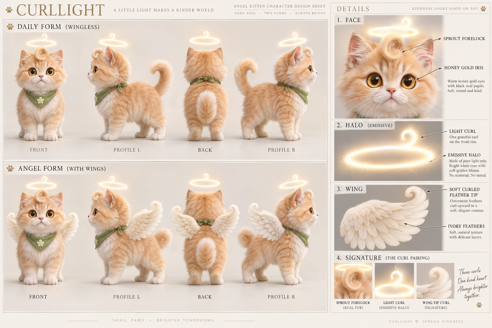
上排无翼／下排有翼；每排正面、朝左侧面、背面、朝右侧面。右侧为面部与眼色、天使光环、羽翼、特色部位特写。点击看原图。
- 天使光环
- 一圈暖白自发光细环，前缘一小缕光卷；没有实体边框。
- 羽翼差异
- 圆短奶白羽翼，最外侧一束羽尖轻轻回卷。
- 表演提案
- 抬头时额毛与环边小卷形成呼应；羽尖随着收翅轻轻回弹。
- 控制边界
- 光卷不变成第二个环；卷羽不长成触手。
- 制作核查
- 所有光环均为自发光效果；脸型、花纹、围兜图案、羽尖数量及左右位置仍需选型后精校。图内英文标签可能残留“ribbon”等形状类词汇，以此处“纯光、无实体”的中文设定为准。
下载V3角色卡
V3-02 · 新方案，待用户点评
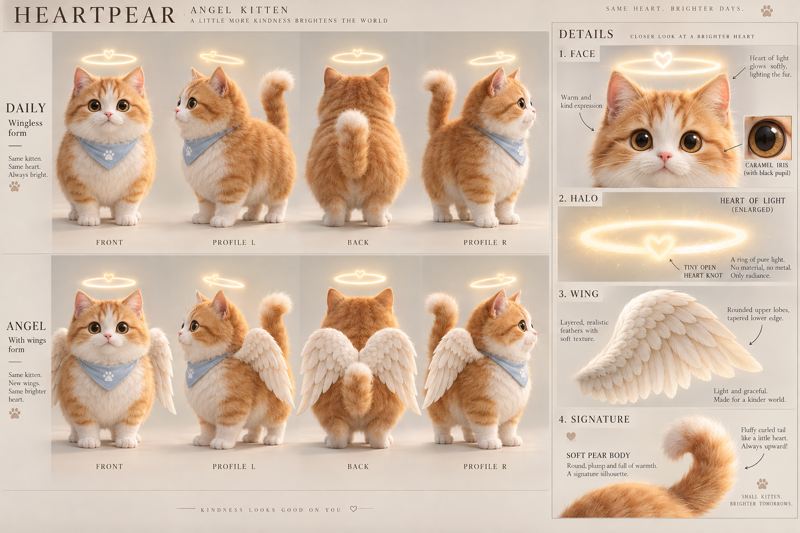
上排无翼／下排有翼；每排正面、朝左侧面、背面、朝右侧面。右侧为面部与眼色、天使光环、羽翼、特色部位特写。点击看原图。
- 天使光环
- 暖白光环前缘汇成小小心形光结，仍是通透的光。
- 羽翼差异
- 两只短圆羽翼从背后展开时，外轮廓合成柔软的心形。
- 表演提案
- 跑到求助者身边后小幅张翅，像准备拥抱；重点仍是猫的动作。
- 控制边界
- 心形来自双翼组合轮廓，不把翅膀变成两个塑料爱心。
- 制作核查
- 所有光环均为自发光效果；脸型、花纹、围兜图案、羽尖数量及左右位置仍需选型后精校。图内英文标签可能残留“ribbon”等形状类词汇，以此处“纯光、无实体”的中文设定为准。
下载V3角色卡
V3-03 · 历史偏好方向 · 当前主角已改选小星
可可 · 水平天使光环
去掉咖啡杯挂件，恢复简洁、水平悬浮的发光天使环。
用户最新要求：“还是去掉咖啡杯挂件吧，天使环回归水平，但保留这个设计。”可可这套历史角色使用无挂件水平光环；当前主角小星保留其原微倾星光环。侧挂杯方案完整留在下方历史区，方便今后回看。
保留：更亮的奶白眉点、略粗的暖白发光环、巧克力白毛色、青绿眼睛、粉鼻、淡黄爪印围兜、奶白问号尾尖和可可羽尖。
生成方式：以内置image_gen参考修订2重新生成整张角色卡，未做程序叠图或局部贴片。只要求移除挂件并调整光环，其余角色特征尽量保持。
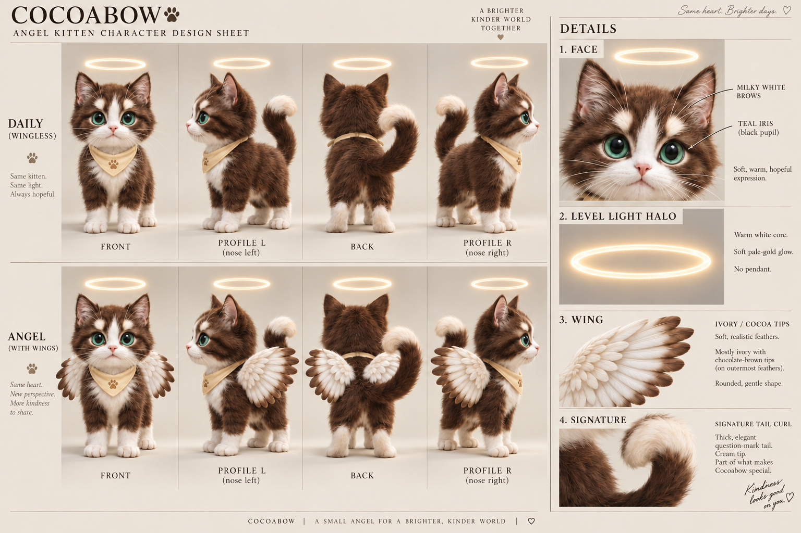
- 当前光环
- 环面平行地面，左右等高；暖白自发光核心与淡金光晕。没有杯子、吊件或旧光结，也不改成金属圈。
- 双形态
- 上排日常无翼，下排天使有翼；右侧保留面部、水平光环、羽翼与尾巴细节。
- 制作边界
- 这是待确认的角色参考图。重新生成可能出现细微比例与花纹差异，最终单视角及视频一致性仍需校准。
下载水平光环修订3 · 下载完整提示词
保留的咖啡杯挂件设计 · 修订2及更早对照
用户要求保留这一设计供以后参考；当前制作使用上方修订3，不再使用杯挂件与倾斜光环。以下按原轮次记录要求。
V3-03 · 侧挂杯历史方案 · 已保留、当前不使用
可可 · 侧垂空杯光环
杯口朝右，杯底朝左；杯身由外侧把手悬住，像挂饰一样侧垂。
用户点评：喜欢V3-03的可爱程度；原修订的杯把连接、材质和直立姿态不符合要求。本轮只继续调整眉点与光环区域。
该轮要求（已被后续修改）：奶白眉点更亮，发光环稍粗。咖啡杯的C字把手两端紧连杯身外侧壁，光环穿过把手孔；杯与光环都为同色自发光材质。空杯，无液体。挂杯一侧的光环低，另一侧高；杯口朝右、杯底朝左，杯身垂在把手下方，不呈桌面直立姿态。
生成方式：以最初V3-03固定猫咪形象，以单独挂杯特写固定道具结构，使用内置image_gen重新生成完整图；没有程序叠图或局部贴片。
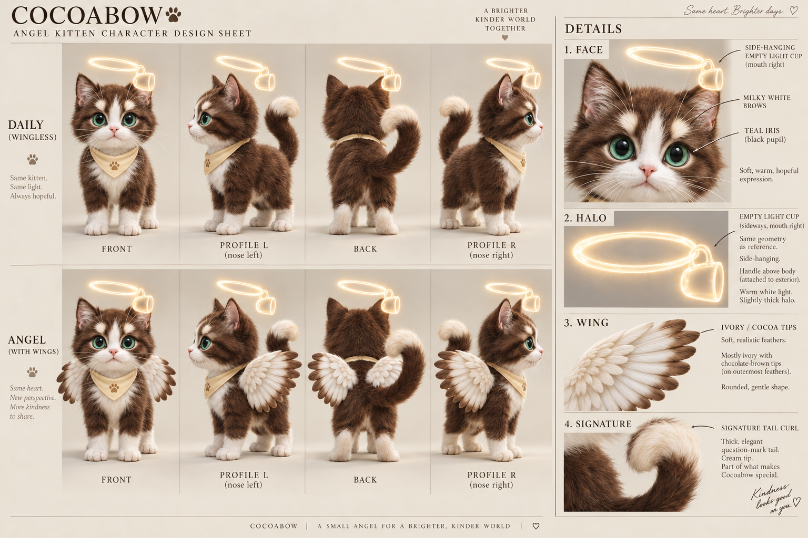
- 结构
- 外侧C形把手双连接点，杯口朝右。光环穿把手孔，杯身以挂饰姿态悬垂；不是杯子放在光环上。
- 材质
- 杯身、杯把、光环同为暖白发光核心与淡金光晕；没有陶瓷杯、金属圈或杯内饮品。
- 保留特征
- 巧克力白毛区、青绿眼睛、粉鼻、淡黄爪印围兜、奶白问号尾尖、可可色羽尖；日常无翼／特殊情境有翼。
- 精校边界
- 本轮已表现侧垂空杯，但四视图的挂杯仍多在画面右侧，尚未严格按角色转身对应空间左右；全卡特写的倾斜幅度也弱于下方道具图。最终单视角需统一挂点、遮挡与倾角，不能直接当作精确三维转台。尚待用户确认。
下载修订2角色卡 · 下载完整提示词
挂杯结构特写 · 本轮参考
以本图核对杯把外侧连接、空杯、侧垂方向与光环倾斜；这是道具参考，未新增世界观能力。
历史修订1 · 用户指出的错误对照
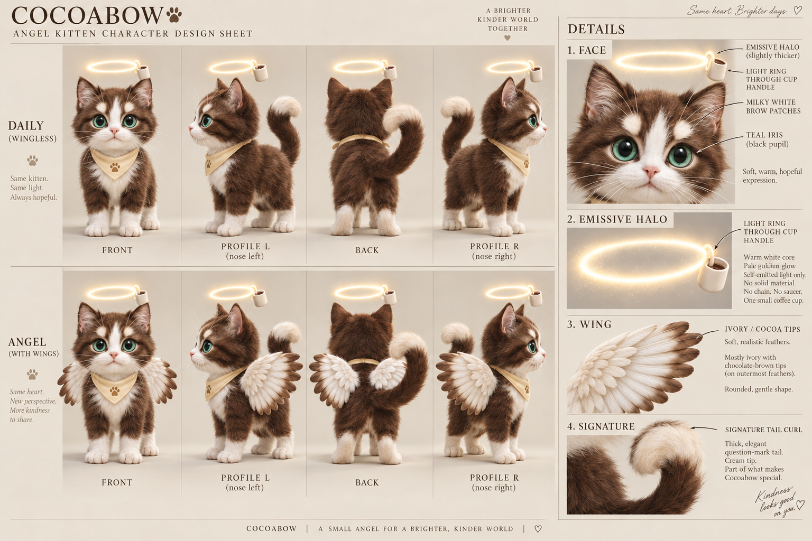
历史图保留供比较。其实体杯、杯把和直立姿态不再作为生成标准；先前把实体杯写成用户要求是记录错误，已纠正。
V3-03原图 · 保留用户喜爱的猫咪形象
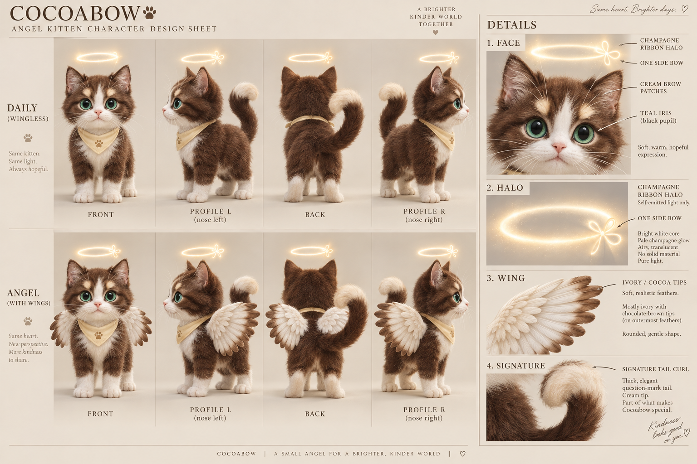
用户认可其整体可爱程度；原光结已由空光杯替代。
V3-04 · 新方案，待用户点评
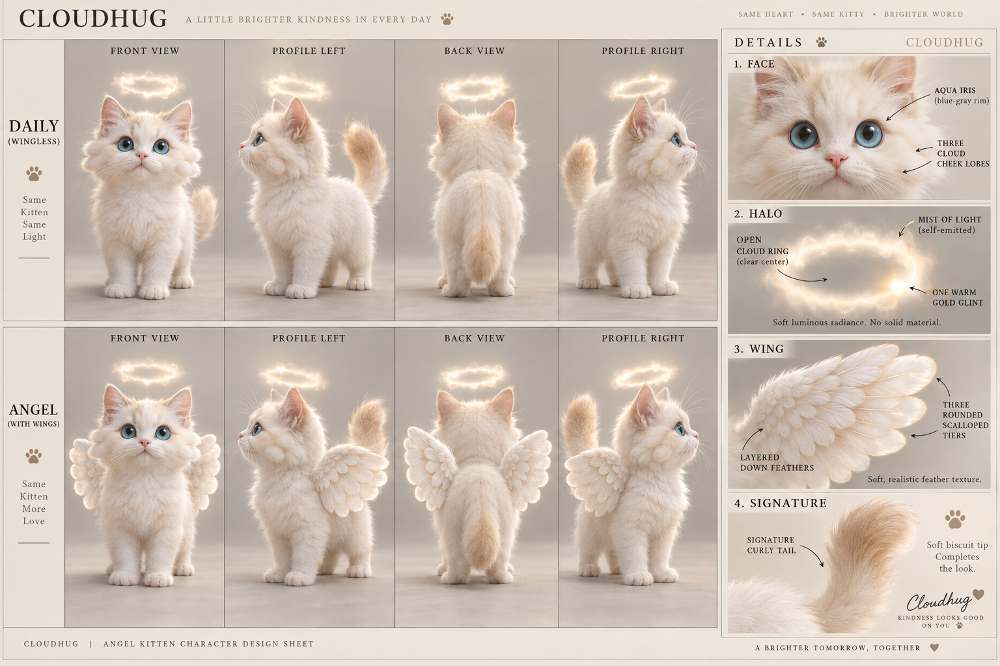
上排无翼／下排有翼；每排正面、朝左侧面、背面、朝右侧面。右侧为面部与眼色、天使光环、羽翼、特色部位特写。点击看原图。
- 天使光环
- 柔雾状乳白光构成中空光环，边缘轻轻起伏，前方一点暖光。
- 羽翼差异
- 小巧圆润的分层绒羽，羽缘像叠起的云瓣，与腮毛呼应。
- 表演提案
- 侧头倾听时腮毛轻晃；翅膀收起成软软的小团，只在有翼状态出现。
- 控制边界
- 云环仍需清晰中空，不做成头顶一坨云；羽翼有羽毛层次，不是棉花球。
- 制作核查
- 所有光环均为自发光效果；脸型、花纹、围兜图案、羽尖数量及左右位置仍需选型后精校。图内英文标签可能残留“ribbon”等形状类词汇，以此处“纯光、无实体”的中文设定为准。
下载V3角色卡
V3-05 · 主角已选 · Clean V1全新生成 · 待用户验收
歪环小星 · 干净基准重建
双形态四视与细节分为两张，保留角色特征，重新生成毛发、眼睛和材质。
用户最新要求：多轮生成后出现失真和网格纹；在不丢失小星基础特征的前提下，重新生成四视与细节。
本轮做法：通过内置image_gen重新生成。四视仅参考早期原探索图的身份外形，并以文字明确已确定的向上卷毛和完整长尾；不把R1/R2多轮修订图作为此次输入，不在它们上面继续补丁或放大。细节图另行生成，以本轮新四视为身份参照，不裁切放大旧图。
保留：杏奶油毛、琥珀眼、粉鼻、从额头向上立起并内卷的单撮毛、嫩芽围兜、微倾纯光环与单颗星光、完整蓬松长卷尾、奶白金尖羽翼。日常无翼，天地往返时有翼；本轮不带出勤物品。
验收状态：新图已检查，未见上一版那种明显规则网格纹。重新生成仍可能带来脸型、毛量、卷尖和翼羽细微变化，待用户审阅；不是经过三维或视频动态验证的最终定妆资产。
01 · 日常／移动双形态四视
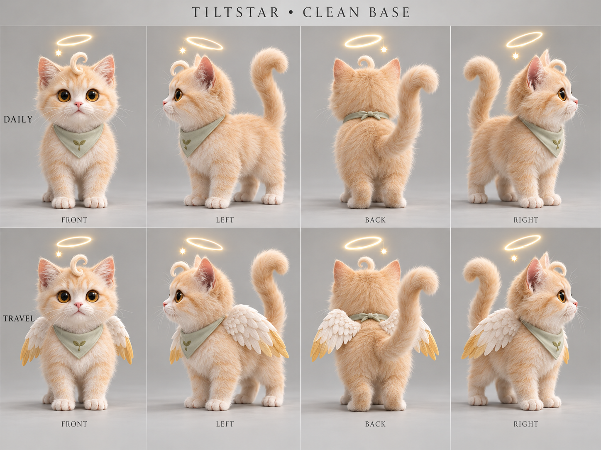
上排 DAILY：无翼；下排 TRAVEL：有翼。每排正面／左侧／背面／右侧。实际原图1448×1086，不是后期插值放大。
下载干净四视原图 · 四视完整提示词
02 · 独立细节参考
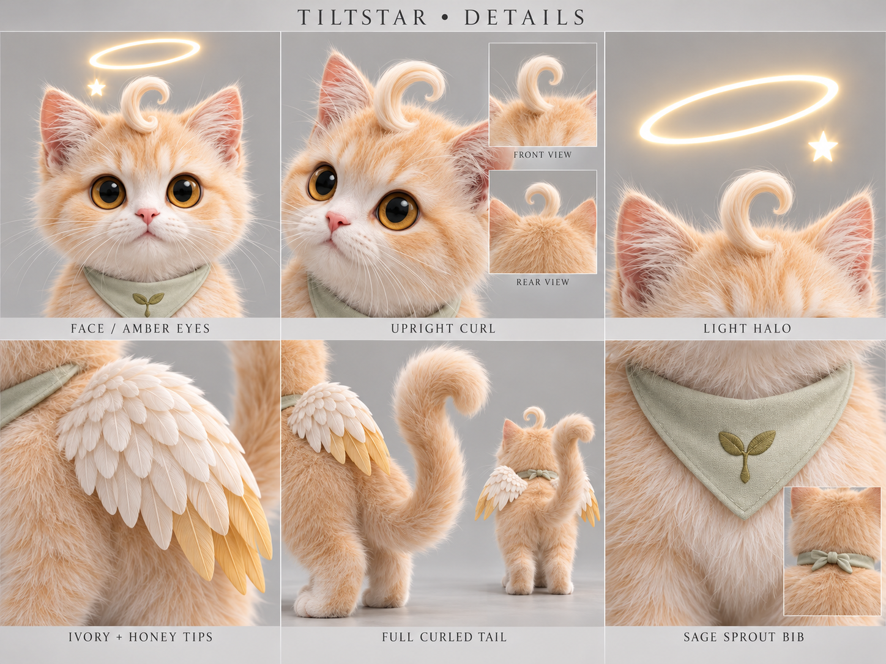
六组细节：面部与眼色／向上卷毛／纯光光环／羽翼／完整卷尾／围兜和后结。实际原图1448×1086。细节图补充材质观察，位置和比例仍应与四视交叉核对。
下载细节原图 · 细节完整提示词 · 本轮生成记录
- 卷毛固定规则
- 根部在额头上缘中央，向上立起后顶端内卷；侧视有上冠轮廓，背视可见上端。整只猫只有这一撮，不因转身变成下垂刘海或消失。
- 尾巴固定规则
- 两种形态使用相同完整长卷尾，尾根在臀背下方，保持毛量、长度与卷曲；不为了露出翅膀而缩短尾巴。
- 天使光环
- 微倾、自发光、单颗星光，悬浮且没有金属、吊链或支撑线。星点在三维空间中的固定方位仍需后续镜头校准。
- 羽翼与使用边界
- 肩背奶白羽翼、蜂蜜金羽尖；翅膀表示天地往返，物品表示出勤。当前没有物品，翼羽数量与动态一致性仍待精校。
- 后续生成参考
- 优先使用本轮干净图，按镜头选择四视或细节；不要反复把带失真的旧修订板当底图，也不把完整多格板直接当成视频画面。
旧基准与用户点评 · 历史下载
原探索图：有翼背视短尾，侧背卷毛不一致。R1补回长尾；R2统一卷毛，但用户指出多次生成后出现失真和网格纹。旧图保留追溯，不再作为当前优先基准。
原探索图 · R1长尾修订 · R2卷毛修订 · 历史修订提示词
下载V3最终生成提示词
V2 · 适度夸张，建立记忆点
当轮用户要求：不在V1原图上修改，重新生成5套；允许适度非现实改造，突出可爱和性格；四视图旁附五官、瞳色、夸张部位的特写与说明。
用户总评：保留这一版。认可01卷毛、03胖橘、04巧克力配色、05云兜；02大耳朵有些违和，需要调整。认可的是这些特征与方向，不等于已最终选定主角。
查看V2全部5套与逐项标记
✓ 用户认可 · 保留候选
全新候选 01 · 杏金水滴眼＋一撮向前弯的芽形额毛晴芽 · 会抬头的小太阳
眼睛与额毛共同形成抬头、好奇、愿意试一试的表情记忆。
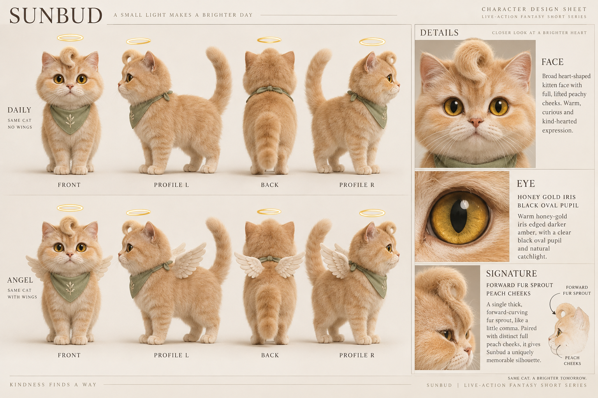
左侧上排无翼、下排有翼；每排正面／朝左侧面／背面／朝右侧面。右侧依次为面部、眼睛、特色部位特写与英文标注；中文说明如下。点击放大。
- 主要记忆点
- 杏金水滴眼＋一撮向前弯的芽形额毛
- 虹膜与瞳孔
- 蜂蜜金虹膜＋深琥珀外环；黑色竖椭圆瞳孔。有色部分为虹膜，中央瞳孔保持黑色；亮点来自光线反射。
- 性格如何可见
- 听见求助先抬头，芽形额毛随着动作轻轻颤动；失败后又探头再试。
- 夸张边界
- 额毛是毛束，不是植物或第三只耳朵；眼睛有湿润感但不持续流泪。
- 后续校准
- 额毛弧度、脸颊宽度、金色虹膜和围兜上的小枝刺绣保持一致；刺绣为本次图像探索细节，不升级为世界观设定。
下载角色卡 PNG
△ 用户反馈 · 耳朵需调整
全新候选 02 · 宽圆叶形大耳＋柔软耳缘毛听芽 · 一对会认真听的叶耳
耳朵与接收心愿的动作直接关联，正面和剪影都能辨认。
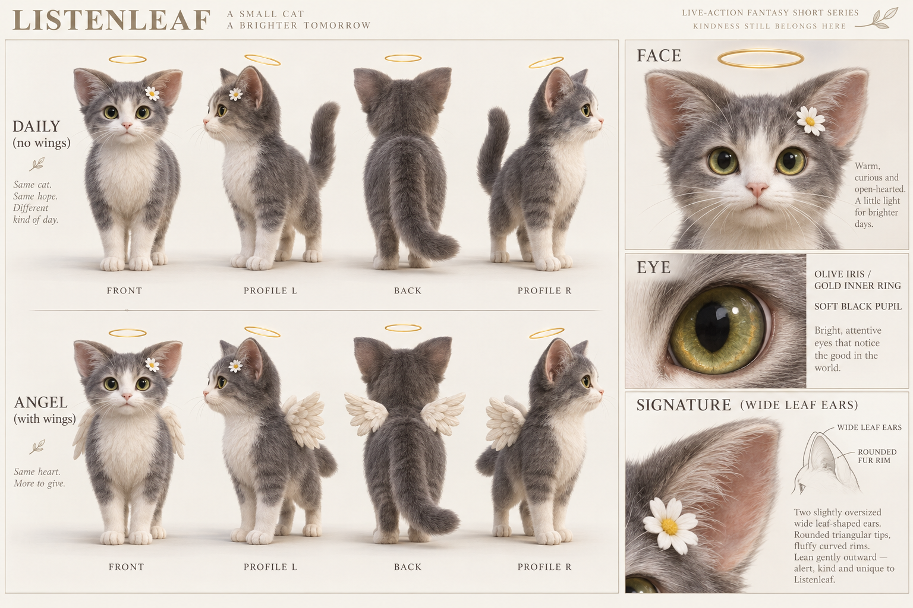
左侧上排无翼、下排有翼；每排正面／朝左侧面／背面／朝右侧面。右侧依次为面部、眼睛、特色部位特写与英文标注；中文说明如下。点击放大。
- 主要记忆点
- 宽圆叶形大耳＋柔软耳缘毛
- 虹膜与瞳孔
- 浅橄榄绿虹膜＋金色内圈；黑色椭圆瞳孔。有色部分为虹膜，中央瞳孔保持黑色；亮点来自光线反射。
- 性格如何可见
- 听见细声先转一只耳朵；理解愿望时两耳向前，替代额外台词。
- 夸张边界
- 叶形来自耳廓轮廓，仍是猫耳；不变成兔耳、精灵耳或折耳。
- 后续校准
- 花朵保持猫的左耳侧，背面遮挡与侧面透视需在定稿时统一；耳形不能随着角度忽大忽小。
下载角色卡 PNG
✓ 用户认可 · 保留候选
全新候选 03 · 明显梨形胖身子＋小圆爪抱抱梨 · 小步快跑的热心团子
身体轮廓有辨识度，能通过停步、回头和贴近形成温暖又略笨拙的表演。
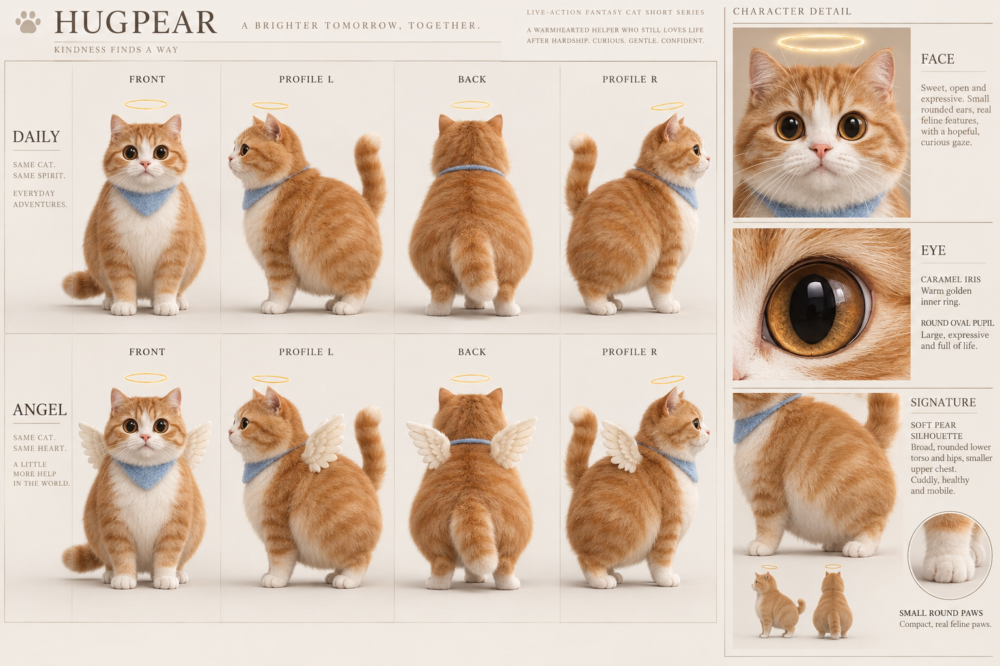
左侧上排无翼、下排有翼；每排正面／朝左侧面／背面／朝右侧面。右侧依次为面部、眼睛、特色部位特写与英文标注；中文说明如下。点击放大。
- 主要记忆点
- 明显梨形胖身子＋小圆爪
- 虹膜与瞳孔
- 焦糖棕虹膜＋暖金内圈；黑色圆椭圆瞳孔。有色部分为虹膜，中央瞳孔保持黑色；亮点来自光线反射。
- 性格如何可见
- 一听见需要帮忙就迈小步赶过去，到了又放轻动作，不压迫胆小求助者。
- 夸张边界
- 丰满是比例设计，不做病态肥胖或短肢畸形；保留足够腿长和行动空间。
- 后续校准
- 图中偏直立的体态需要后续补自然行走／趴卧板，校准四足承重与胖身子的动作幅度。
下载角色卡 PNG
✓ 用户认可 · 保留候选
全新候选 04 · 粗绒问号尾＋对称奶白眉点问问 · 尾巴先举手的小帮手
尾巴可以成为远景识别符号，眉点与眼神增强好奇心。
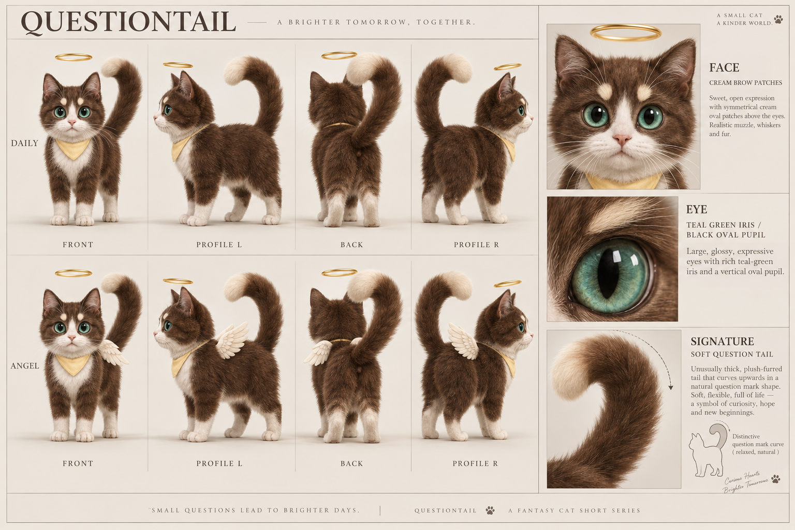
左侧上排无翼、下排有翼；每排正面／朝左侧面／背面／朝右侧面。右侧依次为面部、眼睛、特色部位特写与英文标注；中文说明如下。点击放大。
- 主要记忆点
- 粗绒问号尾＋对称奶白眉点
- 虹膜与瞳孔
- 清透青绿色虹膜；黑色竖椭圆瞳孔。有色部分为虹膜，中央瞳孔保持黑色；亮点来自光线反射。
- 性格如何可见
- 遇到新问题先把尾尖弯起来、探头观察；放松后尾巴自然放下。
- 夸张边界
- 问号是常用尾姿而非僵硬器官；尾巴只能一条，不能变成绳子或发光符号。
- 后续校准
- 背面上翘尾巴会遮挡部分背部与翅膀；定稿另补落尾姿态。眉点、尾尖奶白色块与眼色不得漂移。
下载角色卡 PNG
✓ 用户认可 · 保留候选
全新候选 05 · 两侧三瓣云朵腮毛＋水蓝圆眼云兜 · 把温柔装在腮边
脸部轮廓独特，适合慢眨眼、轻蹭和贴耳倾听的近景。
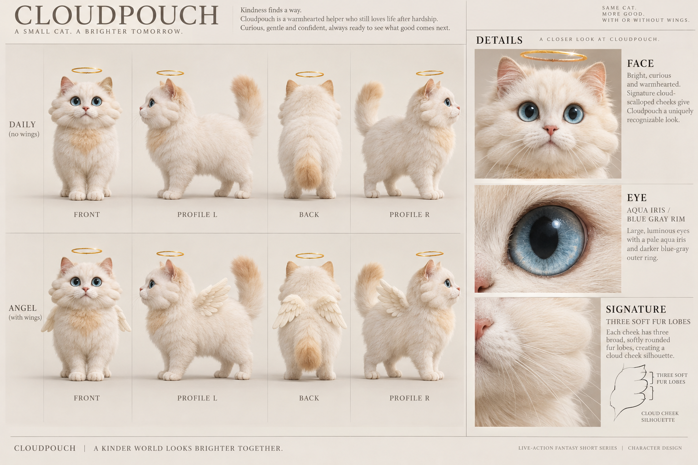
左侧上排无翼、下排有翼；每排正面／朝左侧面／背面／朝右侧面。右侧依次为面部、眼睛、特色部位特写与英文标注；中文说明如下。点击放大。
- 主要记忆点
- 两侧三瓣云朵腮毛＋水蓝圆眼
- 虹膜与瞳孔
- 浅水蓝虹膜＋蓝灰外环；黑色圆椭圆瞳孔。有色部分为虹膜，中央瞳孔保持黑色；亮点来自光线反射。
- 性格如何可见
- 倾听时腮毛随小幅歪头晃动；安心以后轻轻蹭同伴一下。
- 夸张边界
- 云朵轮廓必须由毛发形成，不能变成棉花配件、翅膀或肥大的皮肤肿块。
- 后续校准
- 本次生成图没有明确布质围兜，采用裸颈与胸毛轮廓；以后是否加围兜再选。三瓣腮毛、淡杏耳与尾尖需校准。
下载角色卡 PNG下载V2原始提示词
V1 · 写实初稿
当轮用户要求：可爱小猫、头顶天使光环；围兜或耳旁小花；无翼／有翼两版四视图。写实风格与正常猫体态，经历痛苦仍阳光热心。
用户点评：过于写实，看上去只是顶着天使圈的普通猫；第一眼可爱，但缺少记忆点和继续看的欲望。希望保留现实质感，同时用适度非现实特征增加辨识度。
状态：保留全部原图作为历史对照；这轮没有逐项点赞，不虚构个别方案获认可。后续允许适度风格化的最新要求优先。
展开V1原始5套角色卡
候选 01 · 双形态四视图奶油英短·暖围兜
温暖、圆润，像愿意陪你多待一会儿的小太阳。

上排 DAILY：日常无翼版 · 下排 ANGEL：有翼版。列序：正面／朝画面左的侧面／背面／朝画面右的侧面。点击图片放大。
- 外形锚点
- 奶油色英国短毛猫；浅奶油短毛、琥珀眼、粉鼻、鼠尾草绿三角围兜。
- 设计考虑
- 短毛与大面积浅色形成清楚轮廓，适合贴耳、抬爪、窝进软垫等近景；圆润感是这套方案的重点。
- 可爱表演提案
- 遇到胆小求助者，先趴低身体慢眨眼，再好奇地凑近。
- 连续性检查
- 锁定下巴浅色区、围兜尖角和后颈结；别把圆脸越做越扁、四肢越做越短。
下载这张角色卡 PNG
候选 02 · 双形态四视图蓝双色布偶·小雏菊
温柔明亮，像会把好天气带进房间的小朋友。

上排 DAILY：日常无翼版 · 下排 ANGEL：有翼版。列序：正面／朝画面左的侧面／背面／朝画面右的侧面。点击图片放大。
- 外形锚点
- 蓝双色布偶猫；蓝灰耳与背、白色倒V面罩、蓝眼、半长毛，左耳旁白色雏菊。
- 设计考虑
- 蓬松尾巴和白胸有柔软的视觉感受，适合依偎与陪伴；雏菊可以成为近景记忆点。
- 可爱表演提案
- 听完心愿轻轻侧头，先贴近对方，再一起往前走。
- 连续性检查
- 面罩边界、背部色块、毛长与花朵左右侧需逐镜检查；半长毛也容易遮住肩背翼根。
下载这张角色卡 PNG
候选 03 · 双形态四视图橘白家猫·晴天围兜
住在你家楼下也毫不违和，热心又爱凑近看的小伙伴。

上排 DAILY：日常无翼版 · 下排 ANGEL：有翼版。列序：正面／朝画面左的侧面／背面／朝画面右的侧面。点击图片放大。
- 外形锚点
- 橘白短毛家猫；橘色背与环纹尾、白口鼻与胸腹、四只白爪、琥珀眼、浅蓝围兜。家猫是外形类型，不冒充纯种品种。
- 设计考虑
- 与现实社区和普通家庭的视觉联系直接；橘与蓝的组合清楚，适合阳光、主动帮忙的角色表演。优先推荐试片。
- 可爱表演提案
- 发现对方需要帮助就小跑过去；碰到困难会停下观察，然后再试一次。
- 连续性检查
- 锁定白鼻梁范围、四只白袜高度、尾环位置与围兜结；热情靠耳尾与动作表达，不加人类笑嘴。
下载这张角色卡 PNG
候选 04 · 双形态四视图银虎斑美短·黄花
一双机灵眼睛，认真把小事办好的热心小助手。

上排 DAILY：日常无翼版 · 下排 ANGEL：有翼版。列序：正面／朝画面左的侧面／背面／朝画面右的侧面。点击图片放大。
- 外形锚点
- 银色经典虎斑美国短毛猫；额头M纹、侧腹旋纹、环纹尾、榛绿眼、左耳旁小黄花。
- 设计考虑
- 花纹和小黄花带来明显识别特征，适合好奇探头、观察细节的小动作；更偏活泼机灵的视觉方向。
- 可爱表演提案
- 先转耳朵寻找声音，再低头检查求助者指向的小角落。
- 连续性检查
- 五套中花纹校对负担较高；额头M纹、两侧旋纹和尾环不能每镜重画，左右视图也不能简单镜像代替。
下载这张角色卡 PNG
候选 05 · 双形态四视图白色家猫·杏色围兜
干净、暖和，有一点天使感，也像一只真实的小白猫。

上排 DAILY：日常无翼版 · 下排 ANGEL：有翼版。列序：正面／朝画面左的侧面／背面／朝画面右的侧面。点击图片放大。
- 外形锚点
- 白色短毛家猫；纯白毛、双琥珀眼、粉鼻与粉耳、杏色圆边围兜。家猫是外形类型。
- 设计考虑
- 纯色身体便于观察轮廓，杏色围兜提供暖色记忆点；适合现实房间里的柔和光线。
- 可爱表演提案
- 休息时舒服地伸懒腰，听见求助又立刻抬头，眼神亮起来。
- 连续性检查
- 白毛、白翼与浅背景要留明暗层次；避免过曝丢毛发，双眼保持同色，不随机变成异瞳。
下载这张角色卡 PNG下载V1原始提示词
三轮共15套候选；V3-03保留原图及三次修订，另附历史挂杯结构特写，角色探索区共19张图片。使用内置image_gen生成；V3已按发光材质纠正重做。图片是设计探索，仍需在选型后校准单视角、四足承重、花纹和翼根。标志动作只是提案，不自动增加世界观能力或改变心愿胡须规则。
04.2
场景探索 · S2 办公工作版
胡须到来之前，它已经在认真做事。
用户要求与S1点评：原五个空间太空旷、太休闲，希望更有办公味。主角平时应处理具体事务，不能只等新愿望。本轮再出五个备选，保留远景与近景。
四镜头：左上工作状态与空间，右上准备出发，左下胡须到达，右下贴耳倾听。办公感由正在进行的任务、工具归位、工作痕迹和动线体现，不添加电话、审批或机构层级。
状态：五版是同一个主要工作地点的备选，不是五处已确认部门。01—04日常工作为助手提案；05结合用户新提出的愿苗养护，详细规则另列03.2独立提案。角色仍参考V3-03-R3，随身物品范围仍只有已暂定的三件。
结合此前竞品研究的设计判断让“职业日常”变成可见动作，让“细节可信”体现为同一包与工具的归位，让“猫味”通过嗅闻、爪推、踩踏、歪头体现。属于对已有研究的创作应用，不是新做的平台统计。办公场景负责支撑生活，单集主体仍是来求助的小动物。
助手建议先比较02工具整备（直接用上工具卷包）与05愿苗养护（更独特的长期工作）；前者不用扩展新生规则，后者需连同03.2讨论。用户尚未选型。
场景 S2-01 · 办公工作版 · 待用户点评
01 · 木柜结案办公室
低矮办公桌、结案卡片和木抽屉，让“刚忙完上一件事，又接到下一根胡须”一眼可读。
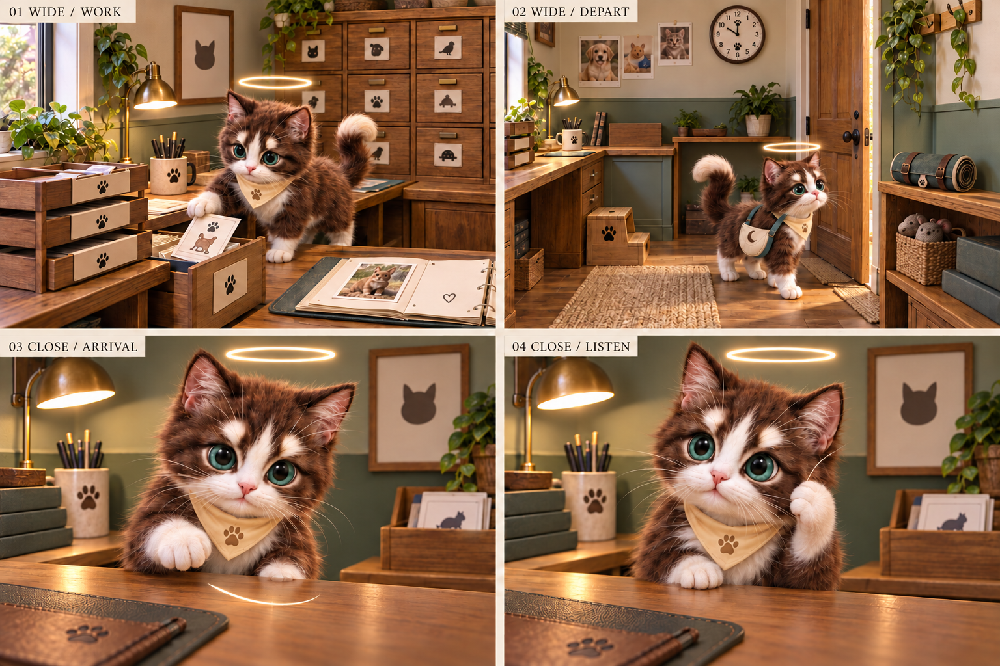
- 没有新愿望时
- 将上一件委托的图像记录归入抽屉，归还用完的材料。
- 近景接愿位置
- 右侧桌角是固定接愿位，后方鼠尾草绿墙留出干净背景，卡片停在画面边缘。
- 工作与出发路线
- 木抽屉归档 → 桌角接愿 → 右侧门边取斜挎包。
- 故事价值
- 结案卡片能在后续镜头里回顾帮助过的小动物，让每一集留下痕迹。
- 需要精校
- 卡片数量、抽屉位置与图标需固定；图像记录是工作提案，不能拍成重复审批。 本图出发小包的扣面已漂移，仍以A1-05原包定妆，不沿用新月图案。
下载四镜头场景板 · 完整提示词
场景 S2-02 · 办公工作版 · 待用户点评
02 · 出勤整备工作室
把已有工具卷包变成工作内容：归还、擦拭、补齐，再出发。
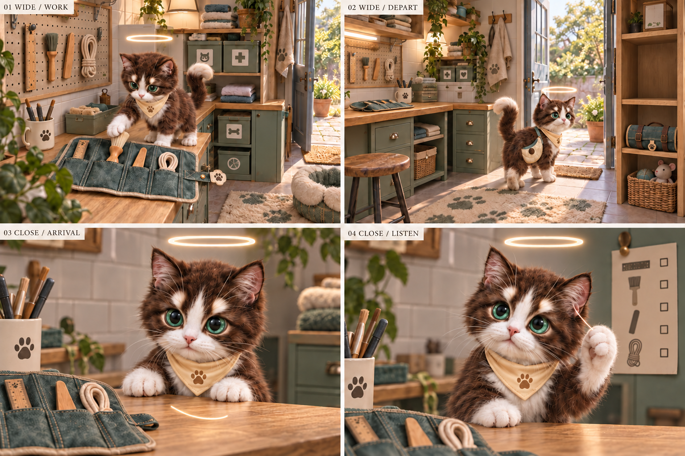
- 没有新愿望时
- 检查工具卷包，擦干工具，将刷子、木楔和棉绳归位。
- 近景接愿位置
- 工作台右端留一块接愿净区；工具放左侧，近景不会被挂板与胡须混在一起。
- 工作与出发路线
- 检查卷包 → 台面右端听愿 → 收拢卷包 → 门边取小提包。
- 故事价值
- 准备工具让职业身份可信，也能产生“反复检查却忘了带”的温和喜剧。
- 需要精校
- 工具槽位、背带和收卷前后结构要一致；不要把维修变成每集唯一任务。 出发镜头出现展开与卷起两个工具包状态同框，正式镜头应只保留同一件；墙面图标不等于新增医疗能力。
下载四镜头场景板 · 完整提示词
场景 S2-03 · 办公工作版 · 待用户点评
03 · 窗边路线工作间
正在为帮助行动寻找可行路线，墙上是几段看得懂的街区关系，而不是神秘控制中心。
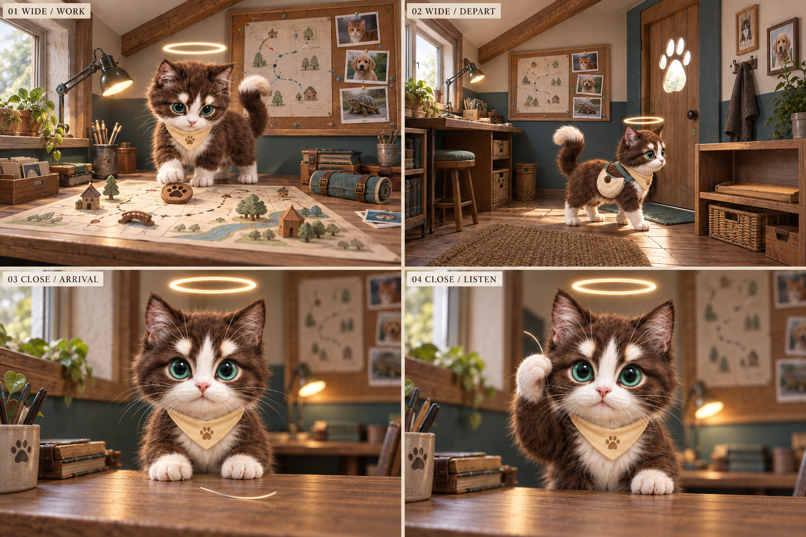
- 没有新愿望时
- 比对前次实地带回的图像，查看目的地附近的屋檐、台阶和可通行路线。
- 近景接愿位置
- 绘图台左前角接愿，窗光照亮眉点；地图留在前景边缘，不挡住胡须。
- 工作与出发路线
- 查看路线 → 同桌接愿 → 对照已有路径 → 右侧门口出发。
- 故事价值
- 目的地和障碍可在一两秒内埋伏笔；观众能提前看见这次帮助有实际难度。
- 需要精校
- 地图是准备工具，不是监控凡间的能力；接愿后不强加每集查地图流程。 纸面地图被扩展成小地形模型，是否保留未定。
下载四镜头场景板 · 完整提示词
场景 S2-04 · 办公工作版 · 待用户点评
04 · 归来补给事务间
有来有回、有使用痕迹的补给桌，让主角忙于把下一次帮助准备好。
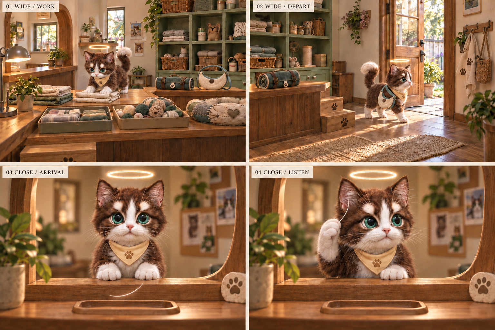
- 没有新愿望时
- 清理归来的小包，补上用掉的棉绳与软布，整理待修补的小垫。
- 近景接愿位置
- 圆角柜台开口前是接愿位，低台阶让猫能自然上下；补给盒压在背景下沿。
- 工作与出发路线
- 清点归来用品 → 柜台前接愿 → 取已补齐的小包 → 门口出发。
- 故事价值
- 用过的软布、少掉的一格材料让“帮助”有真实消耗，温暖而不空泛。
- 需要精校
- 不能变成杂物仓库；盒子、台阶和包的位置要收敛到少数固定资产。 背景毛巾、布料仅是室内用品，不新增披肩穿搭。
下载四镜头场景板 · 完整提示词
场景 S2-05 · 办公工作版 · 待用户点评
05 · 愿苗养护办公室
前半间是事务桌，后半间是有记录、有养护工具的育苗区，试着把种胡须的新想法放进工作空间。
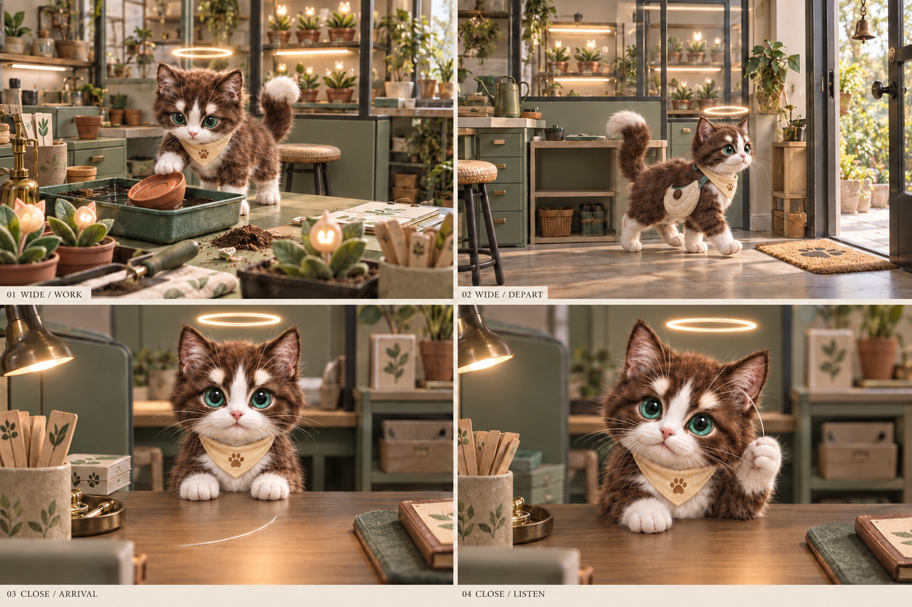
- 没有新愿望时
- 巡看愿苗，补水、转盆向光，检查将要开花的那一株。
- 近景接愿位置
- 前台左角接愿，后方实心隔板挡住植物轮廓；育苗架在远景可见，近景不抢脸。
- 工作与出发路线
- 育苗架巡护 → 前台听愿 → 门边取包；归来后再回到育苗台。
- 故事价值
- 每次帮助留下新愿苗，日常浇护有持续变化，给观众一个想回来看的角落。
- 需要精校
- 以采用愿苗提案为前提；必须区分植物与活猫，不能让培育支线挤占求助动物的故事。 新猫植物数量、形态和光效待独立卡固定，不从背景自动推导灵魂规则。
下载四镜头场景板 · 完整提示词
场景概念板，不是锁定三维资产。新五张均为1536×1024，20个构图。已重生成纠正明显倾斜光环、羽毛化胡须及多余挂包；空间方向、台面高度、贴耳动作、包扣图案与工具唯一性仍需选型后逐镜固定。近景要单独提取并重生成制作图，不能把四格整板直接喂给视频。环境中的普通树景与地面院落只是外景占位，云端地点的最终门外景观尚未冻结。
下载S2五版设计说明与完整提示词
展开S1原五版与用户点评 · 历史保留
04.2
S1历史 · 偏休闲的五版
一个能晒太阳、听愿望，也能收拾出发的地方。
用户要求：以暂定主角V3-03为基础，设计收到祈愿时所在的场所，先出五版。每版四视：近景要看清倾听的位置；远景要能表现收到祈愿前的漫步、日常和准备出发。
本轮理解：四视采用同一场所的四个镜头——两张远景、两张近景，不是建筑正侧背的正投影视图。角色统一参考V3-03修订3：巧克力奶白猫、亮眉点、青绿眼睛、浅黄围兜、无挂件水平光环，室内日常无翼。
版本与点评：场景S1-01至S1-05是同一个接愿场所的五种备选，不是五处已确认的办公室。用户最新点评：整体太空旷、太休闲，希望更有办公感；尚未选定某一场所。工作名、家具、收须浅碟与小包均为视觉提案；不新增接线步骤。
上排 · 远景
左：空间全貌与日常走动。右：同一空间的出发方向、门口和小包位置。镜头要交代主角可以怎样走过去。
下排 · 近景
左：固定接愿位，主角发现到来的胡须。右：同一位置贴耳倾听的表情与耳部特写。留下窗框或台面作为位置线索。
从既有竞品研究转成场景设计“猫味”靠晒太阳、四足漫步和踩软垫表现；“细节可信”靠固定的窗、台面、门口和接愿路线；“生活日常”靠休息角与出发角共存；“固定角色”靠浅背景衬出可可的眉点、眼睛和巧克力毛。这些是设计推导，不是新做的平台数据统计或流量保证。
历史建议保留记录：曾建议比较01易拍与05圆窗识别；当前优先比较S2办公工作版，不把旧建议当用户选择。
历史场景 S1-01 · 用户认为整体偏休闲
01 · 晒太阳的阁楼窗台
奶油色阁楼里的宽窗台就是接愿位置，晒太阳、接愿、取包出发都在同一个小房间完成。
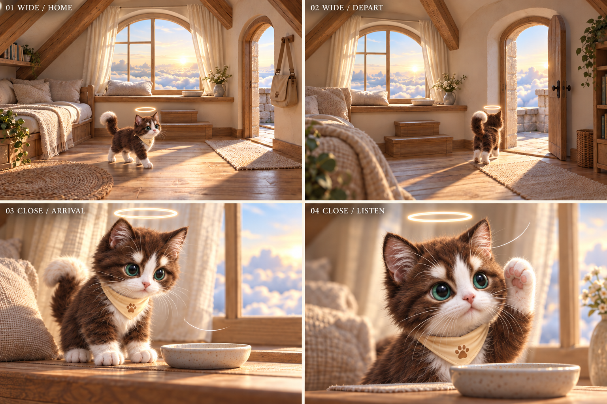
- 近景坐在哪里
- 宽窗台铺一小块亚麻垫，主角坐在上面，胡须在旁边的小浅碟上方出现。特写以窗框、纱帘和浅木色台面作为固定背景。
- 远景怎么活动
- 地板晒太阳 → 两级木踏步 → 接愿窗台 → 右侧门边取包 → 屋外平台。一个房间能覆盖日常与出发。
- 情绪与记忆点
- 像一只被好好照顾的猫，也像一个终于拥有自己小家的年轻人。窗边打盹被愿望叫醒，容易拍出温暖与轻喜剧。
- 与可可的搭配
- 奶油墙面衬出巧克力毛，暖光呼应奶白眉点与黄色围兜；窗帘与软垫能承接踩奶、蹭脸等猫本能。
- 制作成本判断
- 较低：单室、单主窗光、短路线。
- 需精校的地方
- 布料褶皱、窗框和小包位置需锁定；图中小包偏高，正式资产应下移到猫爪可及处。贴耳胡须目前有悬浮感，尚非动作定稿。
下载四视图 · 查看生成提示词
历史场景 S1-02 · 用户认为整体偏休闲
02 · 云边玻璃花房
一张石台与一条低矮步道藏在透光花房里，叶影、雨珠和猫咪的日常动作能成为画面记忆点。
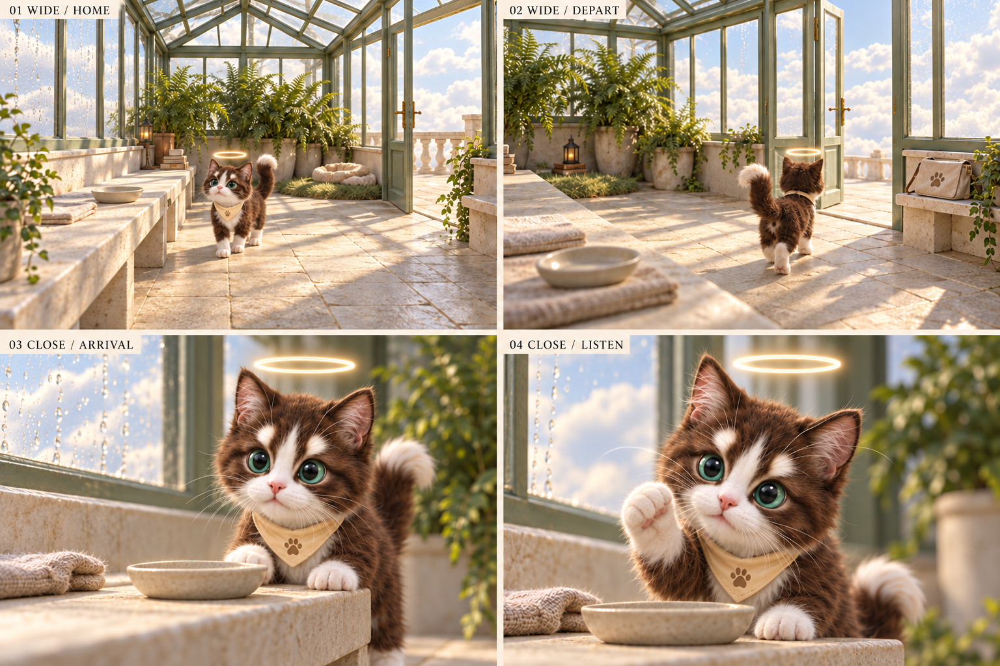
- 近景坐在哪里
- 玻璃墙边的低石台作为接愿位，猫前爪搭在台边；用浅石墙与虚化绿叶衬脸，避免玻璃线条切过眼睛与耳朵。
- 远景怎么活动
- 中央石板路散步 → 左侧石台接愿 → 门边低架取包 → 玻璃门外露台。花房内留出清楚走道。
- 情绪与记忆点
- 雨珠、叶影、四足巡游能让观众感觉这里真的住着一只猫，季节变化也容易成为每集开场的小变化。
- 与可可的搭配
- 鼠尾草绿与青绿眼睛呼应，米白石台托住白爪和巧克力毛色，玻璃空间显得轻盈。
- 制作成本判断
- 较高：玻璃反射与植物连续性较复杂。
- 需精校的地方
- 反光、玻璃格栅和植物叶片跨镜头易漂移；近景愿望胡须较淡，倾听姿态更接近抬爪，正式镜头须强化贴耳关系。
下载四视图 · 查看生成提示词
历史场景 S1-03 · 用户认为整体偏休闲
03 · 风吹过的小院廊台
主角在安静小院里漫步，在廊下低台上听愿望；生活感最强，适合治愈与周末支线。
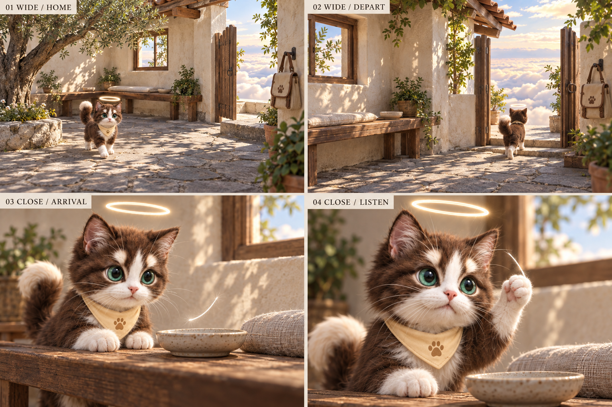
- 近景坐在哪里
- 廊下木台与软垫作为倾听点，浅灰白墙和小方窗固定在身后。树影落在台面，不抢猫脸与胡须。
- 远景怎么活动
- 石板小院 → 廊下接愿台 → 右侧院门。树下空地可供闲逛、伸懒腰或追一片叶子。
- 情绪与记忆点
- 院落和门槛能制造熟悉的生活感；小天使也会贪恋太阳、玩树影，让乐天派性格通过行为显露。
- 与可可的搭配
- 粗石与柔软猫毛形成触感对比，浅墙让棕色耳朵与头部轮廓更清楚。
- 制作成本判断
- 中等：固定院落容易复用，树影与枝叶需控制。
- 需精校的地方
- 本图部分近景光环略倾斜，不代表修改水平光环设定；台高与包挂点要按猫体型降低，树影方向需统一。
下载四视图 · 查看生成提示词
历史场景 S1-04 · 用户认为整体偏休闲
04 · 云端小站候愿室
一座小小的候愿室和空站台，让收到愿望后的出发具有清楚的方向与仪式感。
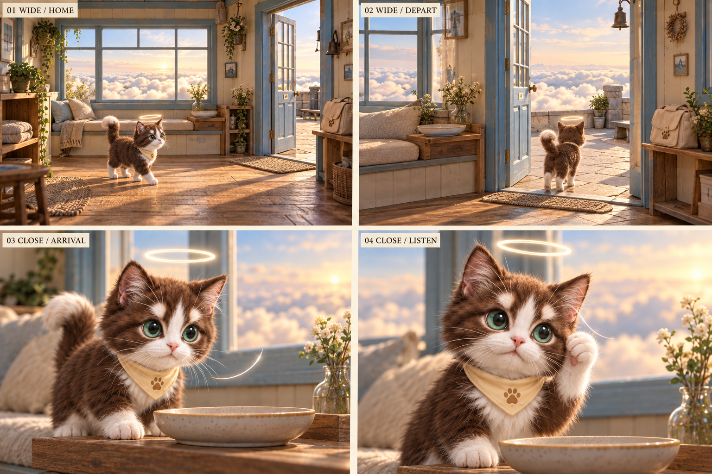
- 近景坐在哪里
- 蓝窗下的长凳端台接愿；坐垫、浅盘与蓝色窗框形成固定组合，正侧两种特写都能辨认地点。
- 远景怎么活动
- 候愿室内走动 → 窗边凳接愿 → 门边取包 → 小站台。用门与平台交代出发方向，不加入检票或派单流程。
- 情绪与记忆点
- “收到一个愿望，就去赴一次约”的出发感较强；蓝色门框可以形成重复出现的镜头标志。
- 与可可的搭配
- 灰蓝木框与暖棕毛色形成柔和对比，窗光让水平光环与毛边都有层次。
- 制作成本判断
- 中等：室内与门外平台两块区域，需锁定窗门位置。
- 需精校的地方
- 站台只作空间隐喻，未设定列车交通或新机构。本图出现的小铃、装饰画只是环境提案，不作为联络媒介；光环角度需精校。
下载四视图 · 查看生成提示词
历史场景 S1-05 · 用户认为整体偏休闲
05 · 圆窗树屋的听愿窝
用圆窗、弧形木台和短坡道形成一个温暖的猫咪小窝，强化主角圆润、乐天的气质。
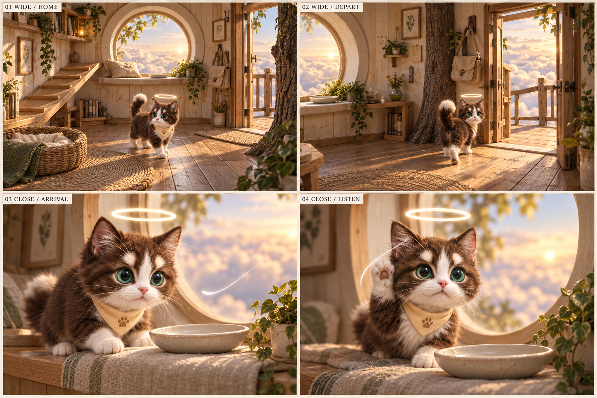
- 近景坐在哪里
- 圆窗内侧的宽平窗台作为倾听窝，窗洞弧线衬着圆脸，坐垫与浅盘固定在窗台。近景仍留一点圆窗边缘。
- 远景怎么活动
- 小窝休息 → 左侧木踏步上窗台 → 接愿 → 从右门去树屋平台。地板与平台可拍散步和收拾。
- 情绪与记忆点
- “一个圆窗里住着一只圆脸小天使”有明确记忆点；探头、缩进窝里、沿踏步走动都适合猫的行为。
- 与可可的搭配
- 圆窗呼应圆眼和圆润脸型，浅木色衬出巧克力毛；弧形建筑与问号尾形成柔和视觉节奏。
- 制作成本判断
- 中等：圆窗易识别，树干纹理和台阶仍需保持。
- 需精校的地方
- 整套木色相近时容易让深棕毛融进背景，保持脸后浅色窗沿；胡须需缩细缩短，树干、踏步及窗台高度须固定。
下载四视图 · 查看生成提示词
本轮是选景板，暂不当成拍摄定稿。共5张1536×1024场景板、20个镜头构图。近景的抬爪、贴耳、胡须长度及部分光环角度仍需单镜精校；角色身份以V3-03修订3为准，场景图不能反向覆盖水平光环规则。两张远景多为邻近机位，不是精确相反视角或三维空间验证。接愿台、包挂点和家具的猫咪尺度还需统一。选中后先固定平面布局与光源，再生成无角色空景和单镜头参考；不把整个四格板直接当作视频输入。
下载五版完整生成记录（公开提示词）
04.3
出门物品 · 当前暂定三件
耳孔鸭舌帽、工具卷包、斜挎小提包。物品范围收拢，后续围绕这三件精校。
用户最新决定：书包弃用；帽子仅前沿两侧开耳孔，大小合头，不包住整个后脑；保留工具卷包和斜挎小提包。其他物品不再进入当前方案。
状态区分：三种物品类别为用户暂定；斜挎小提包原图明确保留，帽子与工具卷包的修订图仍待确认。不是三件必须每次一起穿戴，具体出勤组合尚未冻结。
角色基准：V3-03-R3巧克力白猫、奶白眉点、青绿眼睛、淡黄围兜、问号尾、水平无挂件发光环。穿搭图不替代原角色卡，日常无翼。
当前暂定类别 · 帽型修订图待确认
耳孔鸭舌帽
浅帽冠、前侧双耳孔与鸭舌帽檐；帽子合头，后脑下半部与后颈露出。
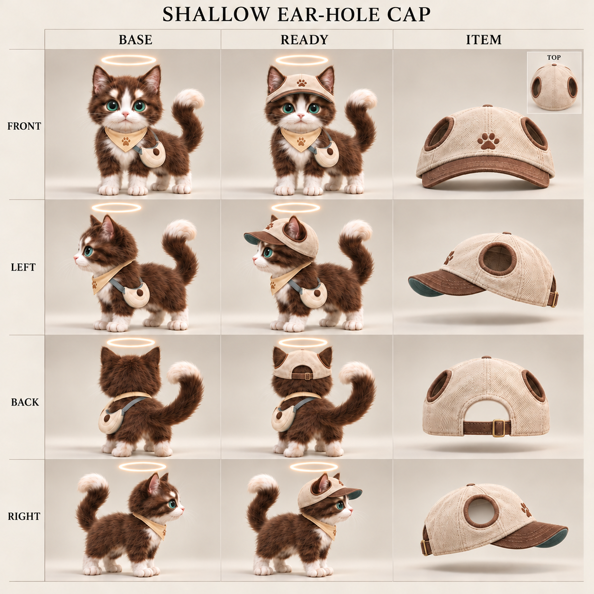
三列 BASE／READY／ITEM，四行正面／左侧／背面／右侧。BASE已带斜挎小提包，READY再增加帽子，物品列仅展示帽子；帽子不是单独出勤装备。
- 用户已定要求
- 鸭舌帽大小合头，前沿左右各一个耳洞；浅冠后缘止于后脑上部，不能像头套覆盖整个后脑。
- 本轮落实
- 重新生成浅帽冠，取消旧图包到后颈的收紧布边；后部增加鸭舌帽调节开口。保留奶油／可可／青绿配色，角色八个视角均有水平光环。
- 使用边界
- 帽子搭配现有斜挎小提包展示；包的定妆基准仍是下方A1-05原图，穿搭图的小差异不覆盖原包设计。
- 下一次精校
- 以背视图确认露出的后脑范围，再固定帽冠深度、两个耳洞位置、帽檐宽度及转头时贴合；新图尚未获用户确认。
下载四视图 · 完整生成提示词
当前暂定类别 · 工具卷包修订图待确认
工具卷包
青绿帆布卷包、可可束带与分格工具插袋；展开后清楚看见工具收纳结构。
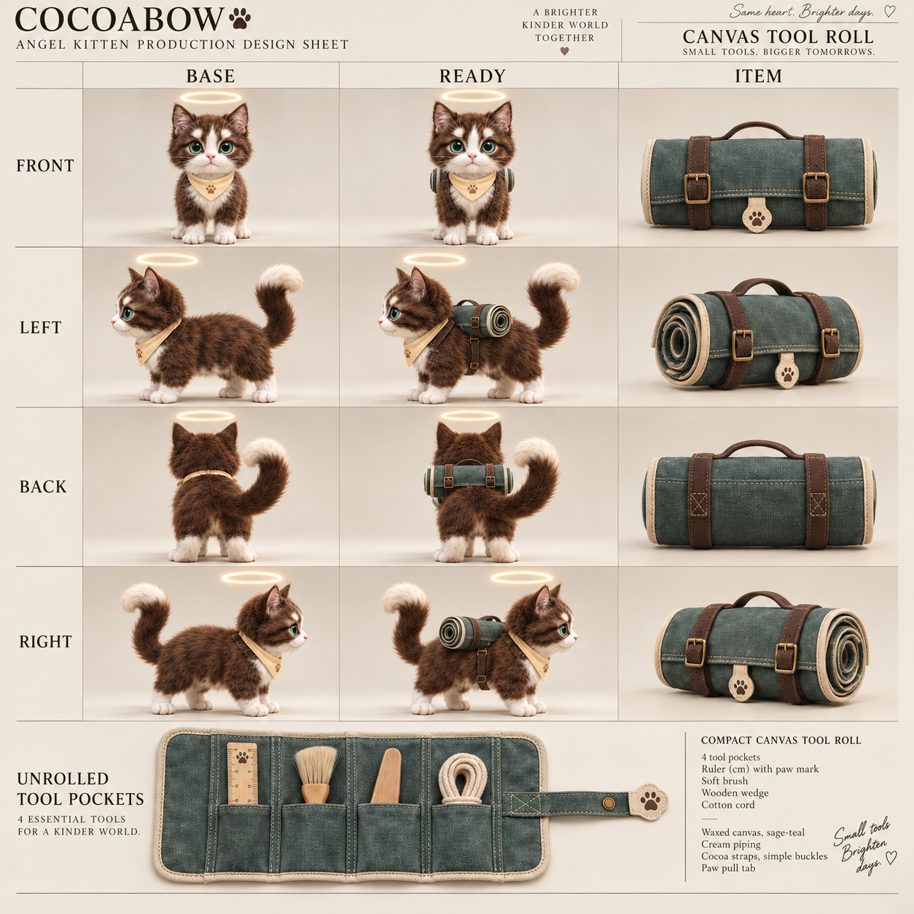
三列 BASE／READY／ITEM，四行正面／左侧／背面／右侧。底部附展开后的工具插袋；图内工具种类是提案，尚未逐件定稿。
- 用户已定要求
- 保留卷包形式，明确改成工具包，不是铺盖。
- 本轮落实
- 薄帆布卷层、双束带、工具分袋及展开细节，说明携带和取用方式。
- 使用边界
- 背部携带图是当前结构提案；实际背带路径、尺寸与有翼状态的兼容仍待定妆。
- 下一次精校
- 固定卷包大小、卷紧后的端面、展开后的工具数量与固定位置；不把四视概念板当作已验证三维模型。
下载四视图 · 完整生成提示词
工具卷包 · V3-05配色适配分支 · 新图待用户点评
V3-05 歪环小星 × 星芽工具卷包
用户要求：给V3-05也做相同的工具卷包，主要修改配色和图案，适配V3-05。
范围：这是已有工具卷包的角色适配款，不新增第四种随身物品，当时尚未决定换角；最新用户已选择V3-05，见主角设定。可可版卷包及两套角色原图保留。
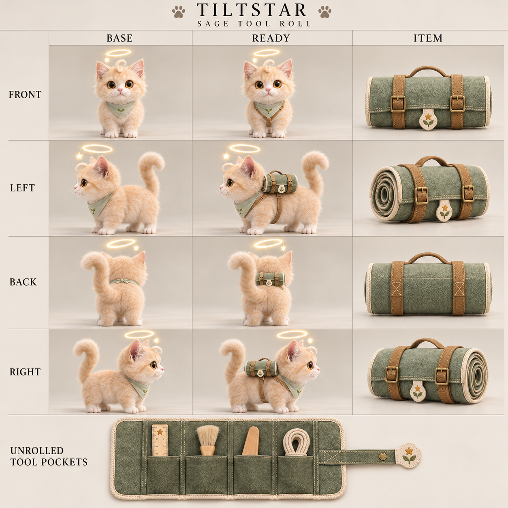
三列：BASE原角色／READY背上工具卷包／ITEM卷包本体。四行：正面、左侧、背面、右侧；下方为展开结构。日常无翼版本。
- 结构沿用
- 保留薄帆布卷装、双束带与扣件、提手、包边及四格插袋；工具仍为尺、软刷、圆头木楔和棉绳，不改成铺盖或普通书包。
- 配色适配
- 浅鼠尾草绿包身、较深橄榄绿内袋、奶油包边、蜂蜜棕束带和提手；呼应杏奶油毛色、琥珀眼与浅绿围兜。
- 图案适配
- 拉片的爪印换为一颗蜂蜜金小星与两片嫩芽刺绣，尺上小标记相应改为星星。图案是普通织物刺绣，不发光，不赋予新能力。
- 保留角色特征
- V3-05的卷额毛、琥珀眼、浅绿嫩芽围兜，以及微倾的发光环和单颗星光均保留。V3-03-R3的水平无挂件规则只针对可可当前修订，不拿来覆盖V3-05原形象。
- 穿戴位置
- 卷包横放肩背上方，尾根和后腰露出；背带绕过前腿活动区，前胸围兜仍可见。
- 待定妆精校
- 四视仍是概念图。包体在各视角的大小、束带路由、刺绣尺寸及星光空间位置须锁定；与有翼形态的兼容尚未验证。新图不反向覆盖V3-05原角色卡。
下载四视与展开图 · 完整生成提示词 · 对照可可版工具卷包
V3-05弯弯报喜包 · 肩带修订R2 · 有翼携包四视 · 待验收
V3-05 歪环小星 × 弯弯报喜包·星芽款
本轮用户要求：为V3-05也做一个弯弯报喜包；在原有角色、携包角色、物品四视的基础上，多一列“有翅膀且带着物品”的模样。
已确认的功能分工：翅膀用于天上与人间之间的往返移动；携带物品标识出门帮忙。两者可以同时出现，飞行时不卸包；落地帮忙仍携包，但不必保留翅膀。
版本边界：沿用原弯弯报喜包的半月轮廓与斜挎结构，增加V3-05配色和纹样。本款保留可可原包为对照；最新主角已选小星，见主角设定；工具卷包仍保留为独立适配款。
用户点评与肩带修订 · R2初稿有三处错误：左侧多余肩带、背面肩带被围巾压住、右侧肩带不清楚。按“先围巾、后斜挎包”修订：左侧去掉重复带条，背面肩带连续跨过围巾外侧，右侧补清晰的斜挎带；无翼与有翼两列同时修改。包始终位于猫自身左侧。
保留半月包型、配色、星芽扣饰、角色与翼型。本次为内置图像生成整图重渲染，未用程序叠图修补。下方是当前修订参考，仍待用户验收。
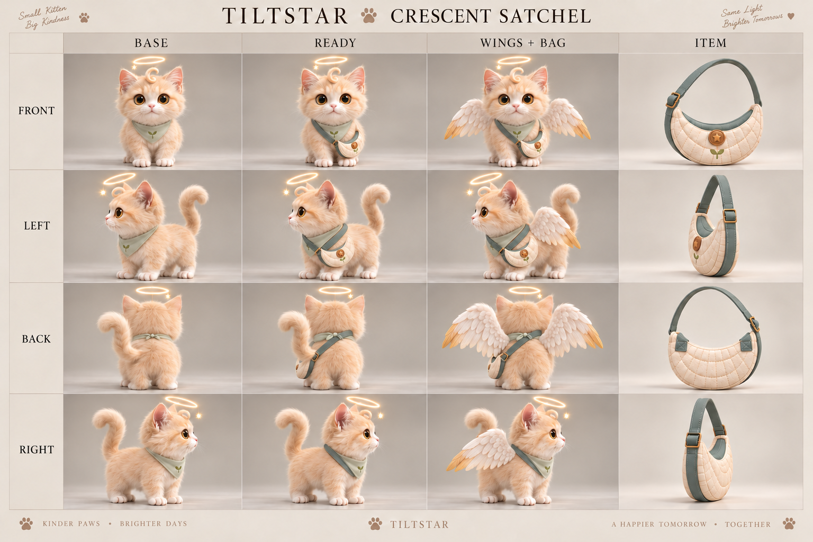
四列：BASE原角色／READY无翼携包／WINGS + BAG有翼携包／ITEM包本体。每列四行：正面、朝左侧面、背面、朝右侧面。横版整图可点击页内放大。
- 保留的包型
- 小巧半月形软包、菱格绗缝、单根可调斜挎带与圆形扣件；包贴在角色自身左侧身，不移到臀部或尾根。
- V3-05配色与图案
- 暖奶油包身、鼠尾草绿斜带与内弧、蜂蜜棕星星圆扣，扣下两片嫩芽刺绣。呼应杏奶油毛、琥珀眼、嫩芽围兜和环边星光；纹样与配色是本轮设计提案，等待点评。
- 保留的角色特征
- 卷额毛、琥珀眼、粉鼻、嫩芽围兜、微倾纯光环及单颗星光。羽翼沿用V3-05原本的奶白羽毛和蜂蜜金尖，不改成新的翼型。
- 有翼携包关系
- 翼根位于肩背，包位于左侧肋部；展开时包仍留在身侧，包带从翼根前下方经过；穿戴顺序为围巾在内、斜挎带在外，交叠处肩带遮住围巾。右侧面允许包被身体遮住，不能为每个角度都露包而换边。
- 状态读法
- 无翼无包：事务所日常；无翼有包：准备出勤或在人间帮忙；有翼有包：天上与人间的往返。翅膀表达移动，物品表达出勤，两者不互相替代。
- 仍需制作验证
- 本图首次给这款包展示有翼四视，是静态概念参考。斜带连接、翼根避让、振翅运动时的碰撞、包体尺度与星光位置仍需单镜精校；尚未做飞行视频，不宣称已通过动态兼容验证。
下载四列四视原图 · 完整生成提示词 · 对照可可原款 · 对照V3-05工具卷包
初稿与修改过程 · 仅供追溯
初稿存在上述肩带错误，不作为后续生成基准。下载初稿 · 初稿提示词 · 三点修订提示词
当前暂定 · 斜挎小提包 · 用户最喜欢并要求保留
用户评价“这5个里最好的，保留”。原图与设计保留，纳入当前三件暂定物品。
05 · 可可 × 弯弯报喜包
奶白半月轮廓、青绿内弧和一枚可可扣，小体积贴在左侧身，不遮住尾巴。
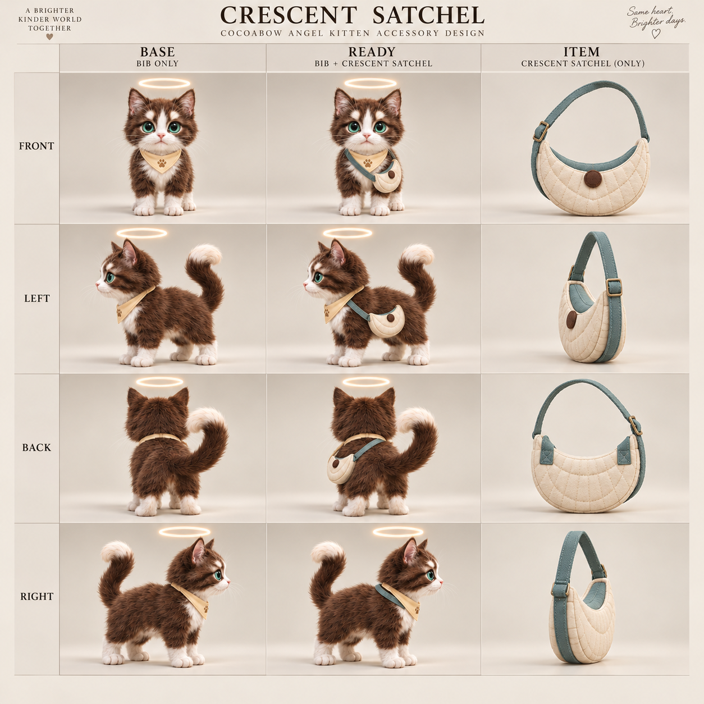
左列 BASE：原角色。中列 READY：只增加本组物品。右列 ITEM：该物品本体。四行对应正面／左侧／背面／右侧；点击页内放大。
- 与现有形象搭配
- 半月弧度与尾巴、笑意相呼应；浅色包在深棕毛旁容易看清，斜带作为较轻的色线。
- 出门与剧情用途
- 主角出门前低头用鼻尖碰一下包扣，确认随身用品；迈步时小包轻晃，提供生活感。
- 辨识角度
- 正面偏侧和左侧明显，右侧有意只看到带子；不能强行让每个角度都露出包。
- 设计判断
- 用户已选为五组中最喜欢的设计，保留奶白半月轮廓、青绿斜带与可可扣；本次不重生成原图。
- 需要校准
- 包必须固定在角色自身左侧，不是所有画面都在同一边；斜带不能遮挡围兜或穿过前腿，转身时需要单镜校准。
下载这一组角色＋物品四视图 · 查看完整提示词
已收拢的边界：书包、斗篷、工装兜、提灯、折叠碗、卷尺均不作为当前新增随身物品继续开发。工具卷包内部工具仅是结构展示提案，不等于额外选定独立装备。这三件物品不替代心愿胡须，也不增加接愿流程或新能力。
A1历史原图与点评 · 展开查看已弃用／已替代的四组
保留探索过程供查阅。原A1-05小提包已移到上方当前方案，图片未改；其余历史图不能作为当前出勤装备参考。
A1-01 · 背负收纳 · 已弃用
用户点评／当前状态首轮指出背包应在背上，背视图却落到屁股。最新明确：书包方案弃用，不再继续修订。
下方保留当时的原图与提案，旧用途和推荐不代表当前决定。
01 · 可可 × 奶盖小背包
奶白三瓣绒盖＋青绿包身＋可可圆扣，背影也能看出柔软的轮廓。
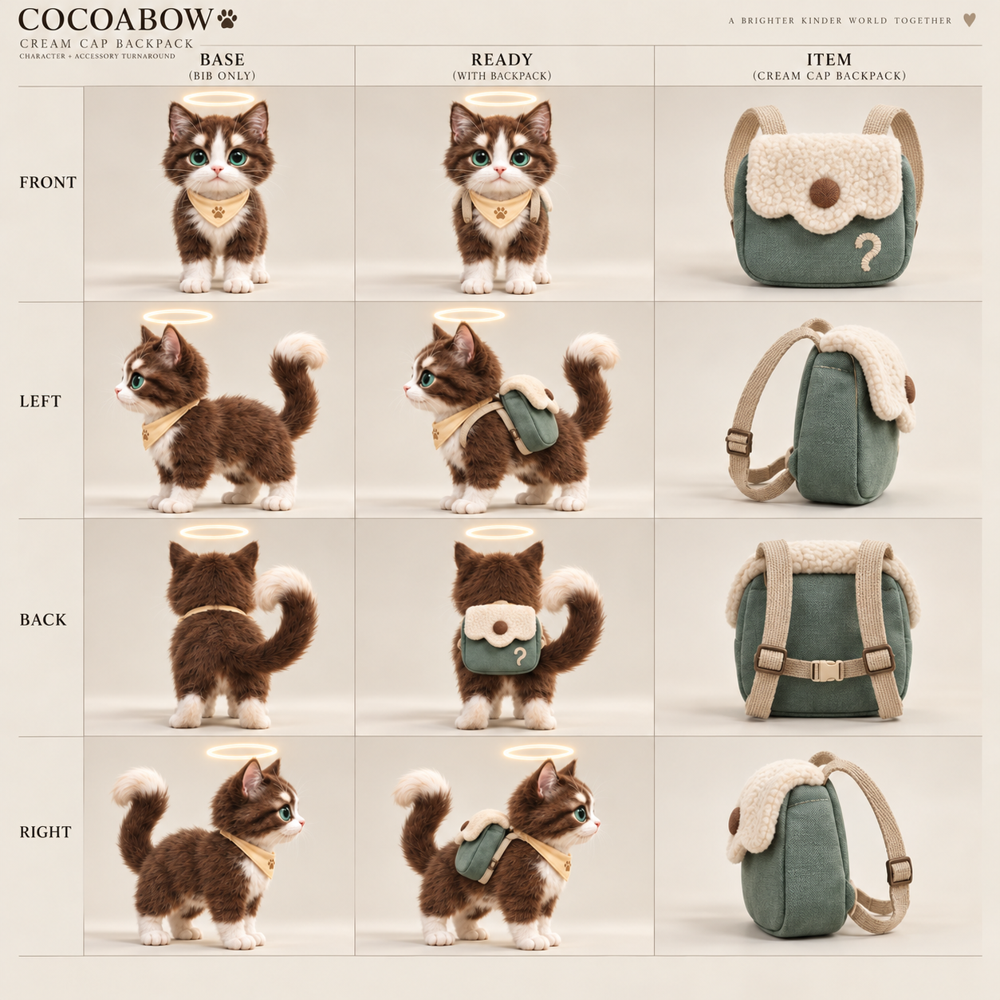
左列 BASE：原角色。中列 READY：只增加本组物品。右列 ITEM：该物品本体。四行对应正面／左侧／背面／右侧；点击页内放大。
- 与现有形象搭配
- 绒盖呼应奶白眉点，青绿与眼睛呼应，圆扣和毛色同属可可棕；原黄色围兜继续露在前面。
- 出门与剧情用途
- 可以带上当天需要的小物；收到愿望后把包往背上一拱、回头确认包还在，是可反复使用的出门动作提案。
- 辨识角度
- 背面最鲜明，侧面次之；正面只有背带，辨识主要仍靠猫脸。
- 设计判断
- 实用、易融入工作日常；背包是常见萌宠元素，要靠绒盖轮廓和固定动作建立自己的记忆点。
- 需要校准
- 问号刺绣被画得较像标点，尚未确定作为正式纹样；背带在猫胸与腋下的路径、有翼时的兼容性未验证。
下载这一组角色＋物品四视图 · 查看完整提示词
A1-02 · 头部标识 · 旧版已由修订替代
用户点评／当前状态首轮认为小帽子夹在耳朵间违和；后续大帽冠又包住后脑。最新明确：要合头的鸭舌帽，仅前沿两侧开耳孔；全包指尺寸合头，不是包住整个脑袋。
下方保留当时的原图与提案，旧用途和推荐不代表当前决定。
02 · 可可 × 折角报到帽
小小帽檐只在一侧翘起，露出青绿底色，形成可辨认的不对称轮廓。
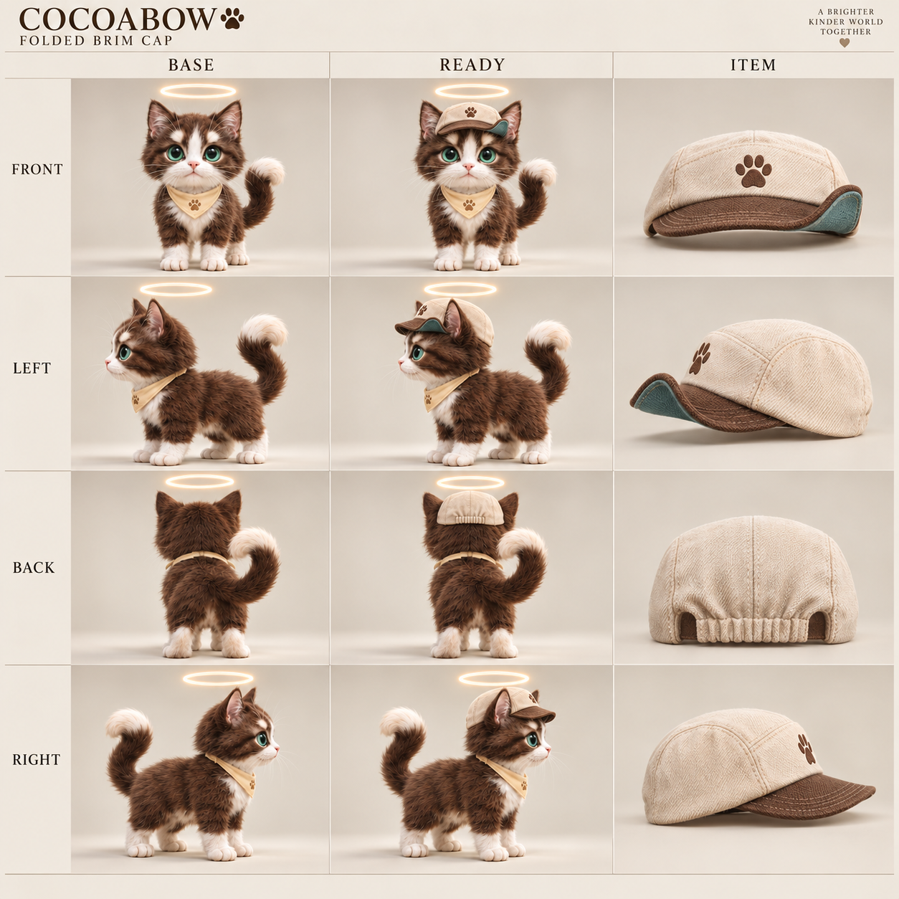
左列 BASE：原角色。中列 READY：只增加本组物品。右列 ITEM：该物品本体。四行对应正面／左侧／背面／右侧；点击页内放大。
- 与现有形象搭配
- 奶油帽身、可可帽檐、青绿翻角延续现有三色；耳朵、眉点和水平光环都保留。
- 出门与剧情用途
- 出门前用爪背轻轻顶一下帽檐，认真“上工”；遇到难题帽子略歪的喜剧动作可后续试拍，但光环仍水平。
- 辨识角度
- 正面和左侧最强，适合近景与头像识别。
- 设计判断
- 最直接改变头部轮廓；会稍微增加职业装气质，需要比较是否削弱自然猫味。
- 需要校准
- 帽檐高度要保证眉点完整露出；帽子与光环间距、翻角左右和四视耳朵遮挡需固定，不增加金属徽章。
下载这一组角色＋物品四视图 · 查看完整提示词
A1-03 · 披搭防护 · 已弃用
用户点评／当前状态用户认为斗篷没必要，已弃用。后续替代工装兜也未进入当前三件物品范围。
下方保留当时的原图与提案，旧用途和推荐不代表当前决定。
03 · 可可 × 晴雨小披肩
青绿短披肩、奶白滚边和圆瓣下摆，背后有一小段太阳纹刺绣。
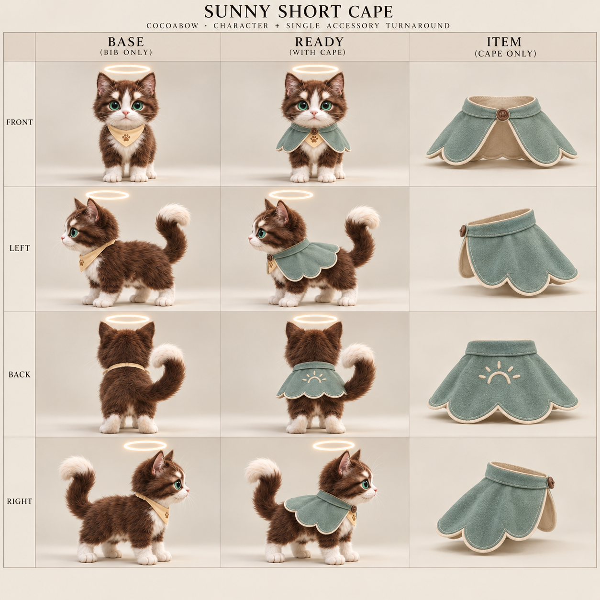
左列 BASE：原角色。中列 READY：只增加本组物品。右列 ITEM：该物品本体。四行对应正面／左侧／背面／右侧；点击页内放大。
- 与现有形象搭配
- 柔和色块衬巧克力毛，前襟开口露出黄围兜；短长度让白爪与问号尾继续清楚。
- 出门与剧情用途
- 赶路时衣摆轻晃；在适合的故事里脱下给小动物挡一阵风，是照顾者气质的动作提案。
- 辨识角度
- 正面和背面都有轮廓变化，远景也较明显。
- 设计判断
- 轮廓醒目、温柔；容易接近常见小斗篷角色，需要克制长度和装饰。
- 需要校准
- 披肩会遮住一部分胸毛和背部毛区，太阳纹与下摆瓣数须锁定；与翅膀暂不同时穿戴，后续需专门设计。
下载这一组角色＋物品四视图 · 查看完整提示词
A1-04 · 卷装随行 · 旧版已由修订替代
用户点评／当前状态用户认可卷起来的形式，但原图像铺盖。现改为有工具插袋、可展开的工具卷包，不再按卷毯使用。
下方保留当时的原图与提案，旧用途和推荐不代表当前决定。
04 · 可可 × 卷卷安心包
奶白绒卷的侧面露出可可螺旋，搭配两道青绿束带，一眼像带着一份小小的温暖。
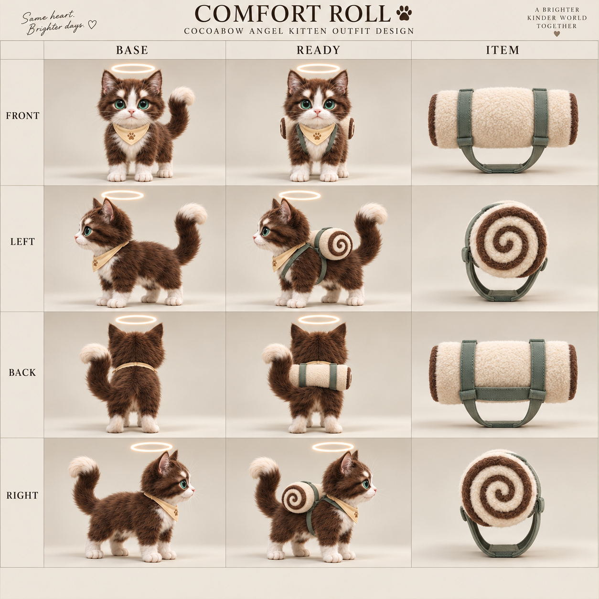
左列 BASE：原角色。中列 READY：只增加本组物品。右列 ITEM：该物品本体。四行对应正面／左侧／背面／右侧；点击页内放大。
- 与现有形象搭配
- 螺旋和问号尾形成呼应，绒面与奶白眉点、毛发触感协调，包体颜色来自主角本身。
- 出门与剧情用途
- 收到求助就背走一卷软毯；到地方铺开给受冻或疲惫的小动物坐。这让物品本身参与“帮助”的故事。
- 辨识角度
- 左右侧面最有记忆点，背面可见卷形与双束带。
- 设计判断
- 与善良、乐于帮忙的人设结合最紧；建议优先测试其缩略图可读性和展开后的连续性。
- 需要校准
- 螺旋容易被误看成蛋糕卷，需用织物边缘、展开动作明确是毯子；正面两端略突出，最终尺寸应收窄；束带承重与尾根留空需校准。
下载这一组角色＋物品四视图 · 查看完整提示词
下载本轮帽子与工具卷包提示词 · 查阅A1历史提示词
04.4
小星音色试听 · 六个候选
给这只小天使，选一个想继续听下去的声音。
小星是一只阳光、热心、很有主意的天使猫。我们希望她的声音年轻、软糯，带一点奶感；表达却自信笃定，还有一点精灵古怪，安慰别人时能认真下来。
2026-10-14 · 六个用户制作的试听样本，尚未定稿。候选编号与原文件 v1—v6 一一对应，不代表排名。建议先听完，再比较。
点击播放器试听，可暂停或拖动进度；播放另一条时，上一条会自动暂停。建议使用相同设备和音量比较，响一些不一定更适合。
VOICE 01
候选 01
0:32 · 原始 WAV · 1.47 MB
音频暂时未能加载，请稍后重试或下载试听。
下载候选 01
VOICE 02
候选 02
0:35 · 原始 WAV · 1.62 MB
音频暂时未能加载，请稍后重试或下载试听。
下载候选 02
VOICE 03
候选 03
0:29 · 原始 WAV · 1.33 MB
音频暂时未能加载，请稍后重试或下载试听。
下载候选 03
VOICE 04
候选 04
0:31 · 原始 WAV · 1.43 MB
音频暂时未能加载，请稍后重试或下载试听。
下载候选 04
VOICE 05
候选 05
0:28 · 原始 WAV · 1.26 MB
音频暂时未能加载，请稍后重试或下载试听。
下载候选 05
VOICE 06
候选 06
0:27 · 原始 WAV · 1.26 MB
音频暂时未能加载，请稍后重试或下载试听。
下载候选 06听完后，告诉我这三件事
- 最像小星的是哪一条？想象她接到愿望、认真帮忙，又偶尔得意地开个小玩笑。
- 哪一条愿意连续听一分钟？留意是否刺耳、刻意夹嗓、咬字含糊，或显得太成熟。
- 有没有一句特别合适，或让你出戏？附上编号与大概时间，会更方便调整。
可以直接这样回复我首选：__号；备选：__号。
最喜欢的地方：__。
建议调整的地方：__（约__秒）。
把反馈发给分享链接的人即可，本页不收集或提交个人信息。
六条均保留用户原文件，没有变调、剪辑或统一响度。试听用于角色选型，喜欢的声音仍需后续测试不同情绪和长台词的一致性。
05
角色关系
系列串联者
灯灯
倾听、理解、提供帮助，串联整个系列。
单集情感中心
当集求助动物
拥有愿望、采取行动、承受结果。
关系的另一端
被牵挂的人或动物
让愿望具有具体对象，并作出关键回应。
后续可增加一位与灯灯平级的朋友或同事，用于周末、午休和下班后的支线。它不负责解释世界观，也不成为导师。
平时照顾别人的灯灯，也会被别人照顾。
首批作品不急着引入完整同事群像。
06
三条叙事线
主线 · 人间来电
它在牵挂什么？
主人疲惫、动物关系、流浪生活、日常小愿望。开发优先级最高。
支线 · 灯灯的生活
它平时怎样生活？
周末、休息、朋友、工作后的放松。主角被喜欢后逐步增加。
隐线 · 灯灯的过去
它为什么特别理解？
对物件或处境的特殊反应、残缺记忆。少量埋设，延迟揭示。
开发初期，可把约八成选题资源放在人间故事，其余用于生活支线和隐线。这是内部篇幅原则，不是固定发布比例。
隐线的职责重新解释观众已经喜欢的角色。不要先用大量悲惨身世要求观众心疼它，再让它开始工作。
07
主线的故事发动机
每一集用同一张故事卡开发：
谁来求助→表面愿望→真正牵挂→已经尝试→灯灯的小帮助→当事者行动→关系变化
表面愿望与真实愿望可以不同
“让主人不上班”，背后可能是“希望主人能好好休息”。
“让我变瘦”，背后可能是“我想和朋友一起跳上那个窗台”。
事件解决与情感完成不必一致
主人未必因此不加班，但终于吃上了一顿热饭。
流浪猫未必当晚就有了家，但有人开始每天为它留一处干燥的位置。
保留一点现实重量，帮助才会显得珍贵。
08
选题版图
流浪故事不靠“更惨”升级可以写聪明、谨慎、讲义气、爱面子、愿意保护别人。困境需要被看见，动物也需要有自己的性格和尊严。
09
一分钟单元剧的基本结构
工作模板，不要求每集机械重复。时间为开发建议，并非定稿分镜。
先认识来电者，再进入求助
不让每集都从事务所收取胡须开始。观众先认识当集动物，才会关心它为什么舍得发出心愿。常规集可省略取须过程，保留放行、贴耳和出发的识别动作；灯灯抵达人间也不必每次完整展示。
结尾示例主人终于睡着。猫把伸向玩具的爪子收回来，轻轻趴在她身边。
让观众自己感受到主题，通常比再补一段“毛孩子永远爱我们”的总结更有力量。
10
第一阶段 · 六个独立故事
先让每个故事独立成立，再考虑长篇连载。
01
《她说她不饿》
猫发现主人又没有认真吃饭。愿望是让她吃上一顿热的，重点是双方都在惦记对方。
02
《主人被电脑抓住了》
猫误以为主人被工作设备困住。偏喜剧，让观众认识灯灯也会被求助者带偏。
03
《纸箱外面还在下雨》
流浪猫替更小的猫求助。重点放在试探、信任和一个人愿意停下来。
04
《那个窗台有多高》
胖猫想加入朋友的日落聚会。轻松可爱，避免把减肥写成羞辱身体。
05
《最暖的位置》
家里老猫一开始躲开新来的小猫，行动却暴露了关心。扩展动物之间的关系。
06
《今天灯灯不上班》
一条轻支线，让它从功能角色变成观众愿意陪伴的角色；结尾可以被朋友照顾，而非又被迫加班。
第一阶段不安排完整身世揭露，也不急着以临终故事作为首发。先让观众建立对这个世界的信任，再承接更重的情绪。
11
隐线：灯灯的过去
保留伤口，但不把苦难当作角色价值。
“它曾有不幸经历，因此特别理解求助者”这一方向可以保留。建议调整其中的因果：灯灯并非因为受过足够多的苦，才获得成为天使的资格；它来到这里以后，仍然选择关心别人。
先埋三个生活细节
线索一 · 雨
每次下雨，它都会先检查纸箱底部是不是干的。
线索二 · 等待
别人说“等我回来”，它总会认真记住。
线索三 · 旧布
它的小房间里有一块旧布，颜色褪了，却一直没有换掉。
当前不必锁死它究竟因何离世。先确定线索最终指向什么情感，再决定过去发生过什么，避免为催泪拼接多重惨剧。
揭示时机前传在观众开始主动好奇它之后开发，不按“小半年到了”机械启动。
12
工业化开发的交付框架
用能够约束后续创作的文件，减少角色、规则和镜头的反复返工。
参考图开发清单
本版保留V1—V3共15套图及每轮要求／点评，新增V3发光光环与羽翼探索（见04.1），尚未选定正式形象；新增接愿场所五版（见04.2），其余视觉资产继续开发。
- 灯灯角色定妆板已完成五套双形态四向候选；选中后继续校准单视角和体型比例。
- 表情与动作板倾听、开心、判断错了、认真行动、松一口气；困倦只作日常状态。
- 识别符号板光环固定，比较额毛／耳廓／体型／尾巴／腮毛的主要标志；配饰辅助。日常无翼、特殊情境有翼。
- 事务所场景板已完成S1五版四镜头场景板（04.2），待选型后固定空间、猫咪尺度、光源与无角色空景。
- 人间风格板出租屋、办公楼附近、居民巷口，统一现实质感。
- 心愿胡须仪式板取须的遮挡动作、前爪托举与分开、同一根胡须的人间／云端形态、灯灯贴耳与耳尖反应、小包收拾动作。
- 三张故事关键帧求助、共同尝试、得到回应，验证系列情绪是否成立。
当前版本状态
本版优先保持
来电动物是单集中心；接线过程简单；主线为人间故事，支线为灯灯生活；不引入老者导师；角色可爱并保留猫体态；联络统一采用心愿胡须，地面猫不说人话。
仍待斟酌
剧名、机构名、主角名；最终毛色与配饰；胡须的具体视觉与镜头测试、有限机会的具体数量（目前不设定）；首集剧本；过去经历的具体事件。
来电动物拥有故事。
灯灯帮助它行动。
结尾让一份原本不被察觉的心意被看见。
13
案例优劣分析：维修猫与喵派事务所
学习维修猫怎样让观众关心角色自己的生活；把喵派作为“首集吸引之后，如何持续兑现观看期待”的检查样本。
证据范围 · 2026-10-12 快照本轮取得主页、部分作品详情、互动数据及评论。逐镜复核受到安全验证阻拦，未取得足以核对的完整时间线，因此不评价具体镜头时长、声音、动作连续性或完播表现。下文区分观察事实、解释假设与本项目建议。
喵派的668粉丝已在页面读取；维修猫“约52万粉丝、7月31日起号”由项目发起者提供，本轮未独立核实。模糊显示的“1万+”“10+”不能用于判断掉粉。未根据笔记ID推算首发日期。
参照 A · 咪的妙脆角
有个人愿望的维修猫
以维修职业串起打工、买工具、开店和伙伴关系，让同一个角色的生活具有连续性。这是依据作品标题、文案与评论形成的方向概括。
查看账号 ↗
参照 B · MossPest喵派
猫狗搭档的委托事务所与小剧场
主页同时介绍人类委托事务所、喵派小剧场等系列；可见内容包含编号故事、赶海及影视梗改编。不同内容的受众是否重合，仍需验证。
查看账号 ↗
样本与实际反馈
以上为非随机样本的累计互动快照，不是播放量或互动率。首集上线更早，累计时间不同；缺少曝光、完播、单条涨粉和投放记录，不能把差距全部归因于内容，也不能从评论反推年龄、性别等受众画像。
维修猫：值得学习的优势及其边界
补充的“租房却收获狗跟班”B站样本 ↗长111秒。公开评论把工具收藏和存款联系起来；弹幕也有人质疑维修方式和情节巧合。这是观众反应证据，不能替代实际镜头观察。
借鉴边界：成熟IP已有观众和角色记忆，不能将其当前互动量当成新号预期。不要把所有高热作品细节都当作成功秘诀；工具、称呼、配角关系值得研究，具体形象和剧情应重新设计。111秒样本也不构成统一时长建议。
喵派：已有优点、潜在障碍与不能下的结论
已有优点：首集吸引了明确表示关注的观众；搭档关系、劳动报酬和表情获得回应，作者也有回复。说明事务所概念与角色表演已产生过吸引力。不能把668粉丝等同于题材失败。
本轮不能断言不能认定喵派开头拖沓、接线流程过长、动作僵硬、画面不萌、观众看不懂或账号被限流。逐镜证据与后台指标仍缺失。也不能因未读到负面评论，就认定剧情表达没有问题。
两个案例对项目的共同提醒
“接任务”可以与“角色鲜活”同时成立。事务所是组织故事的方式，关键在于每一集是否有值得关心的愿望、可见的行动与变化，以及看完后再次见到角色的理由。
本项目保留来电动物作为单集中心，同时避免让灯灯成为可替换的传话或施法工具。它不必抢走故事，却应当通过自己的选择参与故事。
14
结合本项目：哪些参考，哪些避免
来电动物让人关心这一集，灯灯让人愿意再看下一集。
本项目的核心是：小动物发现身边的人或伙伴需要帮助，向天上的灯灯求助，再一起促成一点改变。主线仍是来电者的故事；灯灯的周末、同事和过去作为支线或隐线。接线过程保持简单，不增加老者导师，也不把天上机构扩展成复杂职场。
本章的使用方式第13章记录外部案例证据，本章把这些线索转成创作决策。表中的风险是对我们项目的预防检查，不代表已经证实喵派存在相应问题。以下剧情与分镜均为新拟方案，不是参照账号的原片复述；秒数是试作分配，不是平台流量规律。
一、先确定我们与案例的关系
二、逐项对应：可以参考与应当避免
三、把三个现有故事改得更具体
01
《她说她不饿》：把“体恤主人”变成可见行动
切入：猫碗已添满，主人的饭盒仍没打开。猫把自己的小零食推过来，主人却继续盯着屏幕。
求助与选择：来电者希望主人也好好吃饭。灯灯起初带来更多食物，发现缺的并非食物，便陪猫把它最珍惜的小垫子拖到餐桌边，认真等着她。
回应：主人看见两只猫守着未开的饭盒，停下手里的事，热好自己的饭坐下来。猫没有替她解决工作，只让她感到有人惦记。
值得参考：用具体物品承载愿望；灯灯的误判与修正体现性格。
应当避免：变出豪华大餐、给主人讲道理，或让人食用猫的零食。食物动作与猫的能力需在分镜阶段检查。
02
《主人被电脑抓住了》：用动物误解承接打工共鸣
切入：主人说“再五分钟”，猫已把毯子拖来两次。它误以为电脑扣住了主人。
尝试：灯灯先认真研究如何把人“拉出来”，随后发现猫真正想要的是主人回来陪它一会儿。它们把毯子铺在椅边，猫把头轻轻放进主人空着的手里。
回应：主人停一下，摸摸它，给工作留一个保存点。改变很小，但来电者的心意被接住。
值得参考：观众能投射自己的生活，角色又保留猫的认知方式。
应当避免：拔电源、删除工作当作善意；先演很长的天堂办公室再进入人间故事。
03
《纸箱外面还在下雨》：让怜爱同时包含尊重
切入：较大的流浪猫把干处让给幼猫，自己守在滴水的箱口；它搬不动箱子，才向灯灯求助。
共同尝试：灯灯想靠近帮助，流浪猫先护住幼猫。灯灯停下，保持距离；随后引起一位附近店主注意，流浪猫自己决定是否带它们过去。
回应：这一集先落在屋檐下的干箱子和一块新垫布。收养可以以后写，不必一次完成。
值得参考：来电者有选择；灯灯通过观察改变做法；干燥位置也呼应其隐线。
应当避免：靠叠加惨状催泪、让灯灯包办一切，或用一次奇迹保证永久幸福。
这三条是独立试写方案，尚未定稿。它们分别测试被照顾的温暖、猫视角的轻喜剧、谨慎建立信任的感动；不能将三条不同选题的结果当作严格对照实验。
四、一分钟试片：把时间交给谁
以《主人被电脑抓住了》为例，先试下面的分配，再根据可读性调整。短镜头中的猫动作、眼神和道具位置，比增加世界观解释更值得优先检查。
这些是新写的分镜意图，不是对参照作品的实测。是否有台词、实际镜数与最终时长，需在动态试片后决定。
五、包装与制作如何配合内容
标题与封面
先让陌生人理解愿望
可试“她给我添了饭，自己的却没吃”“它以为电脑把主人抓走了”“它把干的地方留给了小猫”。封面优先呈现动物与关键物品的关系；剧名与集数作为系列标识，不承担全部吸引力。
AI 生产适配
让关键动作可读、可复用
先固定灯灯、来电猫与一个人间场景；人类可用手、背影和局部表达。连续接触动作如拖毯子、放头入掌心需单独试片；若不稳定，用动作前后与反应镜头交代因果。不能用无关漂亮画面补时长。
毛茸茸的真实感应服务表演：耳朵先转向声音，爪子护住物品，身体放松后才打哈欠。不要只依赖圆脸大眼、慢镜头或背景音乐来宣布“治愈”。上述动作是本项目的设计目标，并非本轮对两个账号画质高低的判断。
六、先验证观众喜欢什么，再扩写宇宙
- 是否看懂了来电动物的愿望？让少量试看片者不看设定文档，复述“谁想要什么”。如果只能说“天使猫接了个任务”，先改故事表达。
- 是否记住了一次具体的动物行为？关注观众提到拖毯子、让出干处等细节，还是只说画面漂亮；两类反馈意义不同。
- 灯灯是否有被再次看见的理由？观察是否出现角色称呼、习惯记忆和关系期待。没有这类评论时先看样本量，不直接判失败。
- 互动弱究竟发生在哪一层？曝光不足、开头流失、故事中段流失、看完但不关注，需要不同改法。使用平台实际提供的指标，不从点赞数倒推完播率。
- 是否仍在讲同一种核心感受？喜剧、温馨、心酸可以变化，但新选题应继续围绕动物的心意与回应。周末支线也可以让灯灯被朋友照顾。
这一轮优先做的决定保留“一个来电者、一个核心愿望”的主线；在阳光乐天派的主性格下，保留“容易着急、愿意重新倾听”的缺点与成长提案；接线从简；通过小关系积累连载感。先试写上述三种情绪，再选择一条完成低成本动态试片。暂不新增机构层级、特殊能力和悲惨经历。
V0.7 更新：三轮角色卡集中保留，记录各轮要求与点评，标记V2认可的四套；V3新增五套发光天使环与羽翼设计，纠正金属环材质误读。心愿胡须与既有案例证据范围保持。外部案例的逐镜证据缺口仍保留；名称与具体剧本仍为暂定。